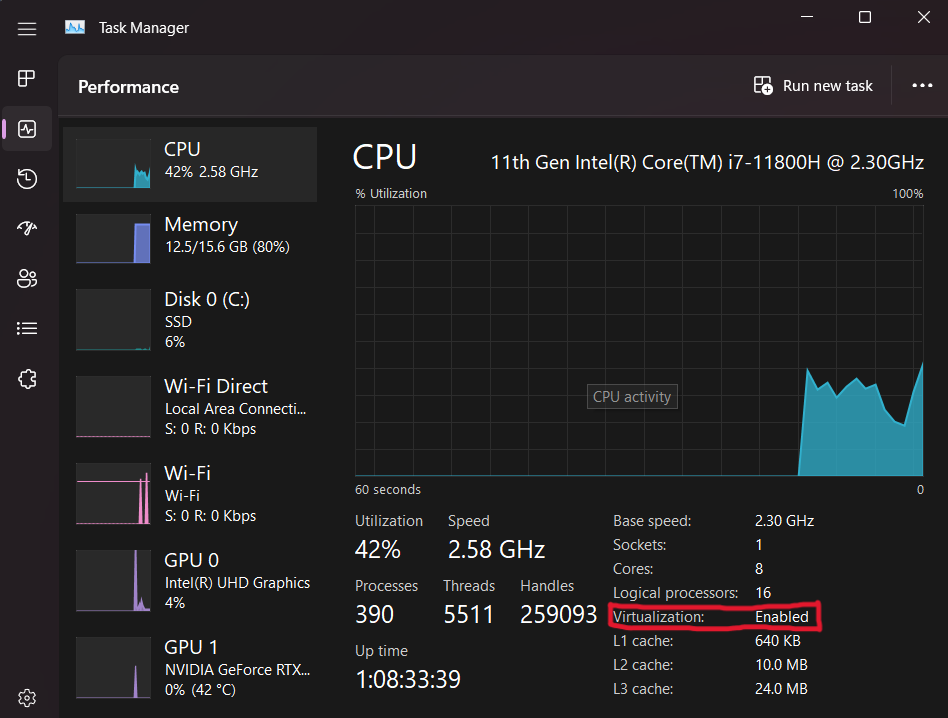
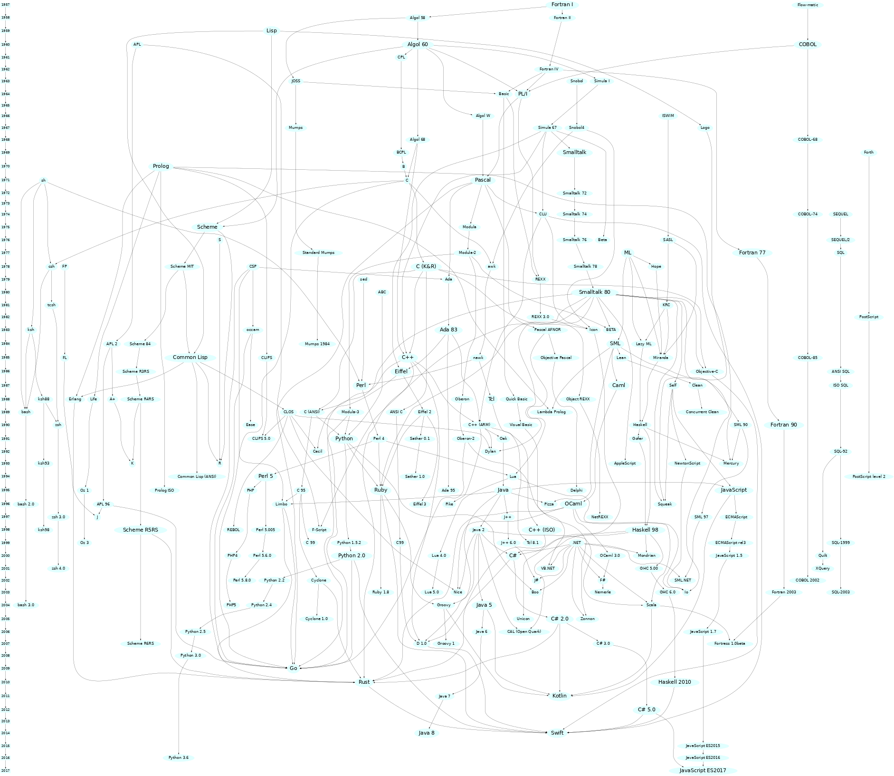
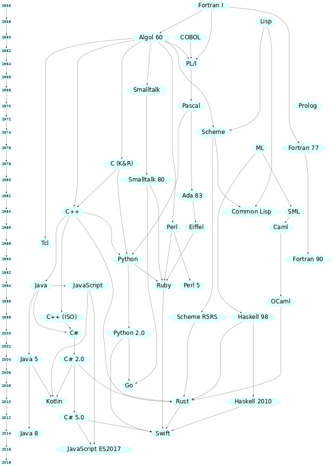
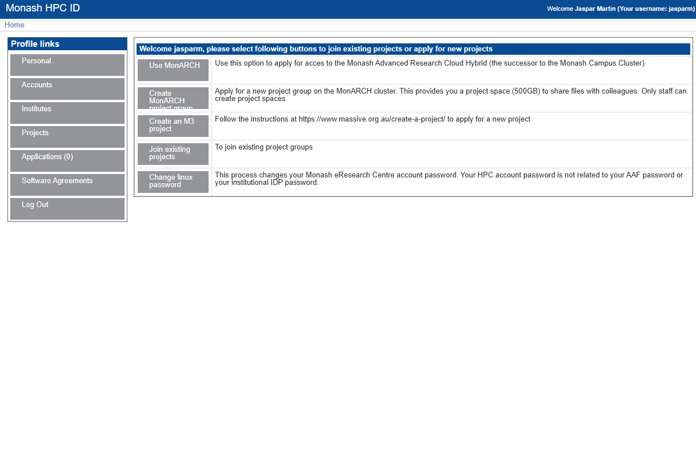
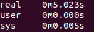

Welcome
Welcome and congratulations on joining the HPC team. This is the HPC Training Book which contains the training material which will be used to train you in many of the preliminary HPC concepts required to participate in the HPC branch and in MDN as a whole. Throughout this book you will learn the basics of the C programming language, parallel and distributed computing and job batching. You will complete challenges across the weeks to test your knowledge and give you the opportunity to practice your skills.
What is HPC?
HPC stands for high performance computing. In involves using extremely powerful machines to perform complex tasks. It combines aspects of network management, parallel computing techniques and distributed computers to solve highly complex problems. The main focus of HPC is to build and use computer clusters; collections or grids of powerful computers that can communicate information between each other, to solve advanced computational problems that involve a lot of data or process power and time.
HPC at Monash DeepNeuron
The HPC branch at Monash DeepNeuron works on many different projects. Everything from creating mini clusters, to using supercomputer clusters to simulate complex, real world systems for research and technology development in may different scientific disciplines. Within the HPC branch you will learn a lot about HPC development starting with the foundational concepts and ideas involved in HPC to working on various projects that implement and utilise these techniques in order to solve many different complex problems.
HPC Training
What is all this and what is it for?
This is a book. More specifically it is the book containing all the content, training resources and learning materials that you will be using to complete you HPC training. The purpose of this book is to provide clear and concise learning resources that you can utilise effectively; not just in your HPC training, but for the entirety of your time at Monash DeepNeuron.
What are you going to learn?
During your HPC training, you are going to learn all about HPC concepts and various tools that exist that allow us to perform HPC development. You will start with the setup process which involves downloading some tools you will be using throughout your training as well as creating a GitHub account. You will then learn about the C programming language and to effectively use it to create powerful and fast computer programs. You will then gain access to M3; Monash's cluster environment, where you will learn hwo to distribute jobs across one or many different computers. You'll also learn about concepts involved in parallel and distributed computing and development programs using these techniques to improve the speed of software applications.
Along the way you will learn how to effectively use developer tools like Git and GitHub as well as solving various challenges each week to test and practice what you have learnt in each chapter.
How to use this book
Using the book is pretty self explanatory. The content is split up into chapters which covers a particular topic which can be further broken down sections. You navigate through the book mostly chronologically using the arrow buttons on either side of the page (can't miss them). You can also look through the chapters and sections to find particular topics or using the search bar, which can be activated by pressing S. Each chapter has a challenges section. These contain various tasks to complete related to the content of each chapter.
Contributing
You can contribute to the book by accessing its GitHub repository (GitHub log in the top right hand corner of any page). Follow the contributing guidelines on the repository for more details.

Getting Started
In this chapter you'll setup some essential software tools that you will be using throughout your training. Note that some sections are specific to particular platform and devices. Only complete the section that is specific to your platform. The GitHub section you must complete no matter which platform you are on.
GitHub
Git. What is it?
Git is a Source Control Management tool (SCM). It keeps a history of multiple files and directories in a bundle called a repository. Git tracks changes using save points called commits. Commits use .diff files to track the difference in files between commits. Repositories can have multiple branches allow many different developers to create new changes and fixes to a codebase that are separate from each other. You can also switch between branches to work on many different changes at once. These branches can then later be merged back together to a main branch, integrating the various changes.
What is GitHub?
GitHub is a remote Git service. This allows you to store Git repositories online so that individuals and teams can access and work on Git repositories and projects remotely. It offers many features on top of basic version control such as branch, issue and feature tracking, releases, CI/CD pipelines, project management and more. Its predominately used through its website which offers control of these features through a simple GUI. Throughout your time at Monash DeepNeuron, university and probably for the rest of your career (if in a software based role), you will use service like GitHub to help management the development of projects.
Your first task is to sign up for a GitHub account, if you haven't already. I would highly recommend using a personal email address (not a university one) as you will most likely want access to your account after university.
It is also a good idea to install the GitHub mobile app. This allows you track and manage projects and reply to messages and issues from your phone.
Joining Monash DeepNeuron's GitHub Organisation
Once you have signed up for GitHub, you will need to provide your instructors with your GitHub username. This is so we can invite you as a member of the Monash DeepNeuron's organisation on GitHub. This will give you access to projects and allow you to communicate with other members. This will also allow you to gain specific privileges for your future projects at Monash DeepNeuron. You're invitation to the organisation will be sent via the email used for your account.
Watching Repositories
GitHub allows you 'watch' repositories. This means you'll be notified of changes to the repository so that you can keep on top of is happening with various projects. You'll be using this later in your training.
Download GitHub Mobile
We would also request you install the GitHub mobile app. This can make it easier to login to your account (2FA), interact in discussions, reply to mentions and manage repositories and projects when you aren't at your computer.
Windows Setup
For your training you will need a few tools. Namely:
- Git
- C compiler toolchain (MSVC)
- A text editor (VSCode)
Installing Git
First, you will need to install Git. This allows you to use Git from the terminal and also gives you access to a bash shell environment. While following the install wizard, make sure to select the option that adds Git to your PATH. This important as it allows you to use Git in 'PowerShell'. Keep the other default operations. Git may require you to restart you machine.
Connect GitHub
Once Git has installed, open a new 'Git Bash' that was installed. This can be found in the Windows 'Start' menu. Once it is open, run the following commands, replacing the username and email section with your details (keeping the quotation marks).
git config --global user.name "<github-username>"
git config --global user.email "<github-email>"
Installing MSVC
Next we will need to install a C compiler toolchain. There a many different environments such as CygWin, MinGW but the most ideal environment is Microsoft's official development environment, MSVC. Download the Community Edition of Visual Studio and launch the installer. Under the 'Workloads' tab of the installer select the 'C++ Build Tools' bundle and click install. This may take a while. Once installed (may require restart) open the 'Start' menu and navigate to the 'Visual Studio' folder. There should a variety of different terminal environment applications. This is because Windows has slightly different toolchains and environments for x86 (32-bit) and x86_64 (64-bit). Select the 'Developer Command Prompt for VS 2022' app. In the terminal that spawns, run the command.
cl
This will display the help options for cl, Window's C compiler.
VSCode Installation and Setup
Now that MingW and GCC are installed and setup we will want to setup a text editor so we can easily edit and build our programs. For your training, I recommend using VSCode as it allows you to customize you developer environment to your needs. If you prefer another editor such as Neovim, feel free to use them as you please.
First download VSCode for Windows VSCode Download
Once installed, open the app and navigate to the extensions tab (icon on the left size made of four boxes). Using the search bar, install the following extensions.
- C/C++
- GitLens
- Git Graph
- GitHub Pull Requests and Issues
- Sonarlint
And thats it, you are all setup.
Mac Setup
For your training you will need a few tools. Namely:
- Xcode
- Git
- C compiler toolchain (GCC)
- A text editor (VSCode)
Installing Xcode, Git & GCC
First, we will need Xcode command line tool utilities, to do so, open the 'Terminal' app and run the following command:
xcode-select --install
This will prompt you to accept the install and will download Git and GCC onto your device. To verify installation was successful, run:
$ xcode-select -p
# Should print this
/Library/Developer/CommandLineTools
Note:
Here,
$indicates the prompt of the terminal. Do not include it in the command. This may be a different symbol on your device.
VSCode Installation and Setup
Now that Homebrew, Xcode and GCC are installed and setup we will want to setup a text editor so we can easily edit and build our programs. For your training, I recommend using VSCode as it allows you to customize you developer environment to your needs. If you prefer another editor such as Neovim, feel free to use them as you please.
First download VSCode for Mac VSCode Download
Once installed, open the app and navigate to the extensions tab (icon on the left size made of four boxes). Using the search bar, install the following extensions.
- C/C++
- GitLens
- Git Graph
- GitHub Pull Requests and Issues
- Sonarlint
And thats it, you are all setup.
Linux Setup
For your training you will need a few tools. Namely:
- Git
- C compiler toolchain (GCC)
- A text editor (VSCode)
For this section I will be assuming a Debian system, namely Ubuntu. Replace apt commands with your distributions relevant package manager.
Installing Packages
To begin, you will need to install some packages. This will be done using apt, Ubuntu's system package manager. Run the commands in the shell.
# `sudo` represents 'super user do'.
# This runs a command with admin. privileges.
# Update apt's local package index.
sudo apt update
# The `-y` flag means upgrade yes to all.
# This bypasses confirming package upgrades.
# Upgrade packages with new versions
sudo apt upgrade -y
# Installs specified packages (separated by spaces).
sudo apt install git curl wget build-essential
And that's it. Linux is setup and installed.
Connect Git & GitHub
Next we will link your GitHub account to you local Git install. Run the following commands, replacing the username and email section with your details (keeping the quotation marks).
git config --global user.name "<github-username>"
git config --global user.email "<github-email>"
VSCode Installation and Setup
Now that GCC is installed and setup we will want to setup a text editor so we can easily edit and build our programs. For your training, I recommend using VSCode as it allows you to customize you developer environment to your needs. If you prefer another editor such as Vim, Emacs or Neovim, feel free to use them as you please.
First download VSCode for Linux VSCode Download
Once installed, open the app and navigate to the extensions tab (icon on the left size made of four boxes). Using the search bar, install the following extensions.
- C/C++
- GitLens
- Git Graph
- GitHub Pull Requests and Issues
- Sonarlint
And thats it, you are all setup.
WSL Setup
For your training you will need a few tools. Namely:
- Windows Terminal
- Windows Subsystem for Linux
- Installing Ubuntu
- Git
- C compiler toolchain (GCC)
- A text editor (VSCode)
This section will cover how to install WSL on Windows. If you already have a WSL setup you can skip these steps.
Installing Windows Terminal
The first thing you will need is the new Windows Terminal app. This makes it easier to have multiple shells open, even different shells. This will be used to access your WSL instance.
Note:
Shells are an environments that allow access to the operating system (OS), hardware and other system processes through simple shell commands, usually a shell language like Bash or Powershell.
Installing and Setting Up WSL
Before you begin make sure to update Windows to make sure you have the latest version. You will then need to check in order to see if you can install WSL is if virtualization is enabled for your device. You can check this by opening 'Task Manager', clicking on the performance tab and looking at the CPU details. There will be an option called 'Virtualization' which should say 'Enabled'.

Next, open Powershell with Administrative Privileges and run the following command.
wsl --install -d Ubuntu-22.04
Once this has finished, you may need to restart your machine. With that WSL is installed. You should be able to open a Ubuntu shell using Windows Terminal by clicking the arrow icon next to the default tab and selecting Ubuntu. On your first launch, this may require you to setup your user credentials.
Installing Packages
To begin, you will need to install some packages. This will be done using apt, Ubuntu's system package manager. Run the commands in the shell.
# `sudo` represents 'super user do'.
# This runs a command with admin. privileges.
# Update apt's local package index.
sudo apt update
# The `-y` flag means upgrade yes to all.
# This bypasses confirming package upgrades.
# Upgrade packages with new versions
sudo apt upgrade -y
# Installs specified packages (separated by spaces).
sudo apt install git curl wget ca-certificates build-essential
And that's it. WSL is setup and installed.
Connect Git & GitHub
Next we will link your GitHub account to you local Git install. Run the following commands, replacing the username and email section with your details (keeping the quotation marks).
git config --global user.name "<github-username>"
git config --global user.email "<github-email>"
VSCode Installation and Setup
Now that WSL, Ubuntu and Git are installed and setup we will want to setup a text editor so we can easily edit and build our programs. For usage with WSL ans your training in general I recommend using VSCode as it allows you to customize you developer environment to your needs. It also can access the WSL filesystem allowing you to work on projects in a native Linux environment on Windows. If you prefer another editor such as Vim, Emacs or Neovim, feel free to use them as you please.
First download VSCode for Windows VSCode Download
Once installed, open the app (on the Windows side) and navigate to the extensions tab (icon on the left size made of four boxes). Using the search bar, install the following extensions.
- C/C++
- GitLens
- Git Graph
- GitHub Pull Requests and Issues
- Sonarlint
- Remote development
- WSL
- Remote SSH
You can then navigate to the window with the Ubuntu shell from before and run:
code .
This will installed VSCode on the WSL from your Windows version and open it in the home directory. And thats it, you are all setup.
Challenges
As you progress through each chapter you will be given a small set of challenges to complete. In order to complete the challenges there is a complementary GitHub template repository found on the Monash DeepNeuron GitHub organisation called HPC Training Challenges. As a template you are able to create your own copy of the repository and complete the challenges completely independent of the other recruits.
Setting Up Challenges Repository
To get setup:
- Click the link above to go to the repository on GitHub.
- Click 'Use this template' button (green) and select 'Create a new repository'.
- Give it a name and make sure it is private.
- Ensure you are copying it to your personal account and not the Monash DeepNeuron organisation. There will be a dropdown next to where you give the repo a name from which you can select your account.
- Click 'Create repository from template'.
- This will open the page for the repository. Click the '<> Code' button (green), make sure you are in the HTTPS tab and copy the link.
- Open a terminal in your dev directory.
- Run:
# Clone to your machine
git clone <repo-link>
# Enter clone's directory
cd <repo-name>
# Create link to template called 'upstream'
git remote add upstream https://github.com/MonashDeepNeuron/HPC-Training-Challenges.git
# Disable pushing to template
git remote set-url --push upstream DISABLE
# Sync with 'upstream'
git fetch upstream
# Merge 'upstream' main branch with your main
git merge upstream/main --allow-unrelated-histories
# Open repository in VSCode
code .
This will clone the repository into you current working directory maintaining its link to its origin (your remote copy on GitHub) allowing you to sync changes between you local and remote copies. This also sets up a link called upstream to the original template directory with pushing disabled. This allows you to sync the base of the repository with your copy, similar to a fork but prevents changes from being pushed to the template.
Once you completed a challenge or made some changes you want to save to your remote repository you can simply add to a commit stage, combine the changes in a commit and then push the commit to origin.
git add . # Add any untracked or modified files
git commit -m "msg" # Commit changes locally with a message
git push origin # Push to your GitHub repository
If you need to sync your local repository with the remote version you can either fetch the changes to add them to the logs without modifying the codebase or pull them to integrate the changes into your version.
git fetch origin # Sync changes with remote without integrating (downloading) them
git pull origin # Sync and integrate remote changes locally
In order to sync your copy of the challenges repository with the remote template you must re-fetch the changes from upstream and then merge the upstream remote with your local repository.
git merge upstream/main --allow-unrelated-histories
Note: Look at the README.md of the repo for the for more instructions.
Challenges Repository
The challenges repository is broken down into different directories for each chapter. For each chapter their will be a series of additional directories corresponding to the specific challenge. These will contain any and all the resources needed for the challenge except programs that you are required to complete.
When you want to attempt a challenge it is good practice to create a branch. This allows you to make changes to the codebase that do not affect other branches each with their own history. You can then later merge branches to integrate changes together. To create a new branch you can use the git-branch command or the the -b flag with the git-checkout command giving both the name of the new branch. This will branch from your current position in the repositories history. Switching branches is achieved using the git-checkout command (with no -b flag). You use the regular git-add, git-commit and git-push commands interact and save the changes that only affect this new branch.
git branch <branch-name> # Create new branch
git checkout <branch-name> # Checkout to the new branch
# or
git checkout -b <branch-name> # Checkout to a new branch
For your training. I would recommend creating a new branch for every challenge you attempt and merging them with the main (default) branch once you are done. This allows you to make modifications to each of your attempts independent of each other as well as make it easier to resync with the template repository should anything change at its base. it also allows you to get some meaningful practice with Git which is one of the most used developer tools in the world.
When you want to merge your changes, checkout back to the main branch and run a merge request. This will pull the changes from the deviating branch into main and update it accordingly.
# On your deviant branch
git fetch origin
git checkout main
git fetch origin
git merge <branch-name>
Note: Merging sometimes creates merge conflicts. This happens when the two branches histories cannot automatically merge. Git has many tools to assist resolving these conflicts and there is a plethora of resources online to assist you. If you get stuck do not hesitate to reach out.
Brief Introduction to C
What is C?
What is C? You may have heard of a something called C in your classes or online but may be unaware of what it is and what it is used for. Simply put C is a general purpose programming language developed at Bell Labs in 1972 by Dennis Ritchie. It was designed to closely reflect the architecture and capabilities of the target device. It was popularized in large part due to its usage and role in the UNIX operating system. Before languages like C, developers and engineers had to mostly use assembly languages; the instruction code that was specific to every single device (CPU in particular), meaning an application for one device would have to be rewritten in the new devices assembly language. C aimed to make this easier, creating a unified language that could then be compiled to any target architecture. The 'write once, compile everywhere' philosophy. This dramatically increased the capabilities of developers to create portable applications that were also easier to write.
Design
C is a very simple programming language. It has relatively minimal syntax, a small standard library and only a few primitive data types and entities. C's power comes from its simplicity, it allows developers to utilise any and all components of a computer in any way the developer sees fit. This is because C is still able to target various system-level operations such as allocate memory and make system calls. This capability is derive from C originating as the language that was used to create the UNIX operating system, the predecessor of Linux and MacOS. C and UNIX were developed simultaneously meaning any operation they needed UNIX to perform had to be accessible from C. C also has a very simple memory model that closely reflects how computer memory is designed today which follows Alan Turing's original description of a Turing machine ie. memory is an infinitely (not truly infinite, but for arguments sake) long tape of individually addressable cells.
Technical Description
C is a static and weakly typed language. What are types? Types are in essence a form of structure, typically dictated by their layout ie. their size in memory. Every language has type system which dictates the operations that can be performed on a particular types and the semantics for when these operations can occur. A statically typed language means that the compiler must know the type of every piece of data in a program. This is because data has a fixed width in C meaning any program written in C must have a known size such that the it can actually run on a machine. Weakly typed describes a language for which data types are allowed to have implicit conversions. This means that you can utilise the same data but in a different shape. This is sometimes useful but more often is a pitfall to the language.
Family History
While many people will talk about the C family of languages, many of the execution techniques used in C were inspired by another language called ALGOL developed in the late 50's. Many of the principles in ALGOL were using in C. See is also the successor to the B programming language (also developed at Bell Labs by Ken Thompson and Dennis Ritchie). C has inspired almost every procedural language used today and has had a massive influence on other language families. Some of the descendants of the C language include C++, Swift, JavaScript, PHP, Rust, HolyC, Java, Go, C#, Perl and (depending who you ask) Python.
Entire (mostly) Programming Language Lineage

- Source rigaux.org
Simplified Programming Language Lineage

- Source rigaux.org
Hello World
If you have ever programmed before you may be familiar with 'Hello World'. If not, a 'Hello World' program is often the first program you write in a programming language. It serves a brief introduction to the languages syntax, a simple workflow in that language and also as a sanity check to ensure the developer tools for the project were installed and setup correctly.
Fun Fact:
The 'Hello World' test program was popularized by Brian Kernighan's Programming in C: A Tutorial.
Setup
To begin open a new terminal window. If you don't already have a development directory it is a good idea to create one. This should be where you host all your projects.
# Optional
mkdir dev
cd dev
In this directory (or another of your choosing) we are going to create a directory for our 'Hello World' project. Finally, we'll open VSCode in this location so that we can easily edit our code.
mkdir hello
cd hello
code .
Note:
Windows users will have to use the Developer Command Prompt used in the Windows section of the last chapter. You will then need to navigate to a different directory. Ideally use your 'Home' directory.
cd C:\Users\<username>You should be able to follow the instructions above normally.
Compiling and Running
'Hello World' in C is quite simple, although not as simple as say Python. First create a new file called main.c.
#include <stdio.h>
int main()
{
puts("Hello World\n");
return 0;
}
To compile and run the program simply run the commands below. The output will be an executable called main (main.exe on Windows) located in the same directory as the source file.
Linux, MacOS & WSL
gcc -o main main.c
./main
Hello World
Windows
cl main.c
main.exe
# ...
Hello World
What's Going On Here?
Let's break down the 'Hello World' program a bit to see what is going on.
#include <stdio.h>
On the first line we have we have included a library. This is the Standard IO library. Libraries come in the form of one or more headers, denoted by the *.h file extension. More on headers in the next section. The #include is called a preprocessor directive. It is resolved at compile time meaning it does not exist at runtime. Here #include will copy (yes, literally copy) the entire contents of the file specified. In this case, it is the file stdio.h. This means that the symbols from this header are now available in our program.
int main()
{
/// ...
return 0;
}
main() is a function. Functions are subroutines that allow us to run a piece of code many time without repeating it everywhere we need it. In C, the main() function has a special meaning, it is the entry point of the application. After some initial setup from the OS, this is first section of the application to run. Here main() takes no arguments however, sometimes it will take two special arguments which are used to communicate information from the outside world to the program at the point of execution. Here, we indicate main() returns an int. The return value is used by the OS to handle specific errors that may occur. A return value of 0 from main indicate success with any non-zero value indicating an error.
puts("Hello World!");
puts() is another function. It was obtained from the stdio library we included before. puts() means 'put string'. It takes a null-terminating string as input and returns the op-code indicating success or failure. As a side effect,puts() writes the string to the stdout file-stream ie. outputs the string to the terminal and appends a newline character at the end. Both the call to puts() and return end in a semicolon. This indicates the end of the line/expression and is required for almost every line of C.
Compilation
C is a compiled language. This means that all the source code is compiled to machine code before the application is run. This means that the compiler needs to know a lot about a program before it can run. Compilation is the process of combining source files into a single binary and because C is a structured language, the order in which files are compiled is important. C also sometimes requires files to be linked together. This occurs when two source files depend on a common library source file.
Header & Source Files
In C there are two kinds of files that are used. Source files and header files. These must be combined appropriately by the compiler in order to produce a working executable.
Header File
Headers are declaration files. They define and state that certain symbols (functions, types etc.) exist such that other headers and source files can use them without knowing there full definition (how they work) yet. Within a header, you define what is called the signature of a function or type. This allows the C type system to validate the uses of the symbol before it even compiles the symbol. Headers in C use the *.h file extension.
Source Files
Source files are the core of any language. They hold the definition of every symbol defined in a codebase. Source files for C use the *.c file extension. Source files are what actually get compiled binary machine code. Source files are often compiled into object files first and then linked together using a linker when they depend on each other or external libraries.
Compiling & Linking
There are four main steps in the compilation pipeline for C programs.
- Pre-process - The Preprocessor is invoked, which includes headers in source files and expands macros. Comments are also stripped at this step. The step creates the Translation Unit (TU) for a source file.
- Compilation - The TU's for each source file is then compiled individually into assembly code. During this step the Abstract Syntax Tree is created for the program and is lower to an Higher Intermediate Representation (HIR). Generally this is created in assembly language of the target platform/CPU.
- Assembly - This step involves lowering the HIR once again into an Intermediate Representation (IR) ie. it assembles the assembly code into an binary object file.
- Linking - This is the final step. Once objects files are created for each TU, we can link them together as well as link any external libraries to form an executable (or binary library file). Linking provides information to an executable about to file the definition of symbols at runtime so that functions will actually execute the correct code. Before this step, the object files just new that certain symbols existed but not where to find them.
Types & Variables
Fundamental Data Types
In C there are six fundamental data types, bool, char, int, float, double and void. There are also a variety of modified integral and floating point types to allow for different sizes.
bool- Boolean type, can either betrueorfalse. It's width is 8-bits (1 byte).char- Character type. Can be unsigned or signed. Represents any ASCII character value. Usually has a width of 8-bits (1 byte).short intorshort- Number type, can be signed or unsigned. Only represents whole number values. Usually has a width of 16-bits (2 bytes).int- Number type, can be signed or unsigned. Only represents whole number values. Usually has a width of 32-bits (4 bytes).long intorlong- Number type, can be signed or unsigned. Only represents whole number values. Sometimes has a width of 32-bits (4 bytes) or 64-bits (8 bytes).long long intorlong long- Number type, can be signed or unsigned. Only represents whole number values. Has a width of 64-bits (8 bytes).float- Single precision floating point type, represents decimal number values. Usually has a width of 32-bits (4 bytes).double- Double precision floating point type, represents decimal number values. Usually has a width of 64-bits (8 bytes).long double- Extended double precision (or quadruple precision) floating point type, represents decimal number values. Usually has a width of at least 64-bits (8 bytes) but sometimes has a width of 128-bits (16 bytes).void- Incomplete data type. Indicates the absence of a type of value.
Note:
bool,charandint(and sized variants) are defined as integral types ie. they are all number types.
Variables
Variables are integral to computer programming. Variables are objects that own a piece of data. What data or rather value of a variable can change throughout the lifetime of a program. To declare a variable in C, we first declare its type. The type predicates which operations are valid for that variable as well as tells the compiler the size of the variable. We then git it a name and assign it an initial value.
/// General syntax: type name = value
int a = 10;
In C variables have 'value semantics', this means that the data of a variable is always copied. For the example above, the data representing the literal 10 is copied into the location of a by the assignment operator (=).
Note: Often the compiler will likely try to construct variables (like
a) directly to the evaluated value of the right-hand-side of the=ie. constructadirectly from10rather than createawith a dummy value and then copy10toa's location. This is called copy elision or return value optimization.
You can also create new variables and initialize them to the value of an existing variables using the same syntax. Because C uses value semantics, b now has its own copy of the data owned by a. These can now be modified independently of each other.
int a = 10;
int b = a;
Note:
- Literals are data with a constant value that are predefined. They are often used to initialise variables to a particular starting value.
- A
charliteral is a single letter surrounded in single quotes eg.'a'is a literal for the letter 'a'.
Constant Data
Sometimes you want data to be constant or immutable. This is data that does not and cannot change during its lifetime. To do this in C we use the const qualifier before the type of a variable. This marks some variable as constant. Constant data must be given an initialiser or the program will not compile. const can be applied to any variable of any type but a constant variable cannot be modified to be mutable however, you can create a copy of a constant variable that is mutable.
const int a = 4;
Static Data
In C you can also allows you to create data that will exist for the entire lifetime of the program and is declared with the static keyword before the type initialiser. This kind of data is said to have static storage duration which means that it remains 'alive' or valid for the entire duration of the program and will not automatically get cleaned up when the it has left scope. This has some interesting implications but the most useful is its usage in function blocks. Static variables allow data to persist between function calls, meaning that if you invoke a function that owns a static variable; say an int, was left with the value 9 once the called had completed, if you were to recall the function and inspect the value the static variable it would still contain the value 9 at the start of the call. This allows you to keep data between function calls.
static int a = 9;
There are other more advanced usages of static that allow you to control the linkage of different translation units (source and object files) but they are beyond the scope of this book.
Operators
Operators are the most primitive way to manipulate data and variables in C. There are four major categories for operators these being arithmetic, bitwise, logical and assignment. Each operator is written in either infix (binary), prefix or prefix (unary) form. Most operators return the result of their evaluation meaning it can can be assigned to a new variable however, some modify the data in-place, this includes all assignment operators and the increment and decrement operators (which do both).
Note: Parenthesis are used to control the order of execution, separating sub-expressions.
Arithmetic Operators
Arithmetic operators work for integral and floating point type. They are the most common type of operator used in C.
| Operator | Name | Description | Example |
|---|---|---|---|
+ | Addition | Adds two values | a + b |
- | Subtraction | Subtracts two values | a - b |
* | Multiplication | Multiplies two values | a * b |
/ | Division | Divides two values | a / b |
% | Modulo Division | Modulo divides two values ie. returns the remainder of the division of two numbers | a % b |
++ | Prefix Increment | Increment the value in-place and return new value | ++a |
-- | Prefix Decrement | Decrement the value in-place and return new value | --a |
++ | Postfix Increment | Increment the value in-place and return old value | a++ |
-- | Postfix Decrement | Decrement the value in-place and return old value | a-- |
+ | Posigation | Set sign of value to positive | +a |
- | Negation | Set sign of value to negative | -a |
Notes:
- Binary arithmetic operators will a return value whose type is the larger of
aorb.- If
aorbis smaller than its counterpart, the smaller will be implicitly promoted to a larger type.- Division between two integral types performs integer division.
- Division between a floating point type and any other type (integral or floating point) performs floating point division by implicitly promoting the integral or smaller argument to an adequate type or size.
- Modulo division does not exist for floating point types.
Bitwise Operators
Bitwise operators are used to manipulate the individual bits of an integral type allowing precise control of the most fundamental data type.
| Operator | Name | Description | Example |
|---|---|---|---|
~ | Complement | Inverts the bits of a values | ~a |
& | And | Ands the bits of two values | a & b |
| | Or | Ors the bits of two values | a | b |
^ | Exclusive Or (Xor) | Xors the bits of two values | a ^ b |
<< | Left Shift | Shifts the bits of a to the left by b positions. | a << b |
>> | Right Shift | Shifts the bits of a to the right by b positions. | a >> b |
Note:
- Bitwise operators do not exist for floating point types.
- Bits are lost from shift operators.
- Left shift (
<<) pads with zeros ie. adds a zero in the new empty position.- Right shift (
>>) pads with the most significant bit ie. the new empty position is filled with the same value as the previous occupant.- Left and right shifts are formally described respectively as: \(a << b a * 2^{b} mod(2^{N})\) and \(a >> b \frac{a}{2^{b}} mod(2^{N})\) where \(N\) is the numbers bits in the resulting value.
Logical Operators
Logical operators operate on Boolean expressions statements. They only evaluate to another Boolean expression (ie. type bool).
| Operator | Name | Description | Example |
|---|---|---|---|
! | Not | Negates the Boolean. | !a |
&& | Logical And | Both a and b must be true. | a && b |
|| | Logical Or | Either a or b must be true. | a || b |
== | Equals | a is equal to b. | a == b |
!= | Not Equal | a is not equal to b. | a != b |
< | Less | a is less than b. | a < b |
> | Greater | a is greater than b. | a > b |
<= | Less than or equal | a is less than or equal to b. | a <= b |
>= | Greater than or equal | a is greater than or equal to b. | a >= b |
Assignment Operators
Assignment operators will perform a binary operation between two values and assign the result to the left argument (excluding =).
| Operator | Name | Description | Example |
|---|---|---|---|
= | Assign | Assigns the value of b to a | a = b |
+= | Add Assign | Assigns the value of a + b to a | a += b |
-= | Subtract Assign | Assigns the value of a - b to a | a -= b |
*= | Multiply Assign | Assigns the value of a * b to a | a *= b |
/= | Divide Assign | Assigns the value of a / b to a | a /= b |
%= | Modulo Divide Assign | Assigns the value of a % b to a | a %= b |
&= | And Assign | Assigns the value of a & b to a | a &= b |
|= | Or Assign | Assigns the value of a | b to a | a |= b |
^= | Xor Assign | Assigns the value of a ^ b to a | a ^= b |
<<= | Left Shift Assign | Assigns the value of a << b to a | a <<= b |
>>= | Right Shift Assign | Assigns the value of a >> b to a | a >>= b |
The result of any expression containing operators can be assigned to a new or existing variable by simply using the expression as the right argument of =.
/// The value of a is the result of the expression.
double a = (6 + 7) / (5.0 * 4); ///< a == 0.650000
sizeof
There is also one final operator called the sizeof operator which returns the number of bytes a particular piece of data occupies in memory. The sizeof operator uses a function call syntax with the argument being the data to be queried.
int a = 4;
double b = 3.154;
int sz_a = sizeof(a); //< 4
int sz_b = sizeof(b); //< 8
Enumerations
The last data type we will look at is the enum. Enums are another integral data type however, they have a limited number of possible states where each state is named by the user. For example consider a Boolean type Bool; although a builtin type can be represented by a enum with its possibles states being False and True. The states or enumerators of an enum are integral constants ie. each name has a particular integer value associated with it. Using the Bool example again, the value of False could be 0 and the value of true could be 1. This would restrict a Bool to only being True or False (1 or 0).
enum Bool { False = 0, True = 1 };
Enums in C can be named (like Bool) or unnamed where the variants are simply generated as named integral constants (similar to just creating constant variables for each variants). Enum variants are accessible as long as the enum is in scope meaning I could use say False anywhere in the program that Bool is in scope without having to express in the language directly that False comes from Bool. The enumerators of an enum always have an underlying type of int meaning they can be used like constant integer value due to C's weak type system. Enumerators will always start with a value of 0 if no value is specified and increase for each subsequent variant however, it is possible to specify any value for variants as long as they are unique.
Type Casting
Often it is useful to be able to convert data of one type to another. This can be done via type casting. This involve prefixing a variable (or function call return) with the desired type you want to cast to surrounded in parenthesis. This will cast the bits of the current variable to the new type which can then be save to a variable of the appropriate type or passed to a functions expecting that type.
#include <stdio.h>
int main()
{
int i = 97;
printf("i = %d\n", i);
char ic = (char)i; //< Cast to char
printf("i = ic = '%c'\n", ic);
return 0;
}
Printing
We're going to briefly discuss how to print stuff to the terminal so you can start writing some C.
printf
Earlier we saw the puts() function which prints strings to the terminal. This function is really good for strings but does not work for any other data type. Instead, there is the printf() function which prints formatted text to the terminal. This allows you to print different data types to the terminal and control various aspects of the output.
Signature
The general signature of printf() is quite unique in C and how it achieves it is a bit of compiler magic in order to actually implement but you do not have to worry about it. printf() takes as its first argument a string that represents the output format of the printed text. The next argument is the .... This is called the ellipsis and it is used to represent a variable number of untyped function arguments. This allows you to pass ass many arguments as you want to printf() and it will print them all as long as there are an equivalent number of positional arguments in the format string. The variadic arguments are inserted in output string in the same order they are passed to printf() ie. there is now way to indicate in the format string which variadic argument to use at any given positional argument. The positional argument introducer character is the % followed by a modifier to indicate in incoming type.
printf(char* fmtstring, ...);
Note:
- Ignore the use of
char*for now.printf()is that it doesn't pad the end if the output string with a newline so you will have to manually provide it. The newline character is'\n'. The backslash is a special character that indicates the proceeding character is "escaped". Escaped characters have special meanings for string and character data. If the format string doesn't have any positional arguments thenprintf()will just print the string likeputs().printf()is not able to print data of any kind without a format string ie.printf(10)would fail to compile.
Example
The following simple code snippet creates to variables num and dec and computes their sum. It then prints a string according to the format "%d + %f = %f", substituting num, dec and sum respectively.
#include <stdio.h>
int main()
{
int num = 4;
double dec = 3.54756;
double sum = num + dec;
printf("%d + %f = %f", num, dec, sum);
return 0;
}
Question: Notice how we used
doublefor the type ofsum. What would happen ifsumtype wasint?
If you want to have a play with printf(), copy the following code snippet run it on your own device. The command will be identically to 'Hello World!'.
Formatting Specification
You'll notice we used a different character after the % for each argument. This is because printf() needs to know the type of the incoming arguments so that it can format the string appropriately. For example floating point types have to use a decimal point when transformed into a text format while integers do not.
C has a concise language for printf() format arguments with the general format for a positional argument specifier being:
_%\[flag\]\[width\]\[.precision\]\[length\]type-specifier_
There are a variety of different options for each part of the specification. Below is a series of tables breaking down the various options for each sub-specifier but note that only type-specifier is needed, the others are optional.
Type Specifiers
| Type Specifier | Type | Example |
|---|---|---|
% | Two sequential % will result in a single % being printed. | % |
d or i | Signed Decimal Integer | 392 |
u | Unsigned Decimal Integer | 7235 |
o | Unsigned Octal Integer | 610 |
x or X | Unsigned Hexadecimal Integer (X: uppercase variant) | 7fa or 7FA |
f or F | Decimal Floating Point (F: uppercase variant for special numbers eg. nan vs NAN) | 392.65 |
e or E | Scientific Notation (mantissa and exponent) (E: uppercase variant) | 3.9265e+2 or 3.9265E+2 |
g or G | Use the shortest representation: %e or %f (G: uses uppercase variants) | 7fa or 7Fa |
a or A | Hexadecimal Floating Point (A: uppercase variant) | 7fa or 7Fa |
c | Character | a |
s | String | example |
p | Pointer Address | 0x7ffce531691c |
n | Prints nothing. The argument corresponding to this specifier must be pointer to a signed integer. Stores the number of character written so far. |
Flags
| Flag | Description |
|---|---|
- | Left-justify within the given field width; Right justification is the default (see width sub-specifier). |
+ | Forces to preceed the result with a plus or minus sign (+ or -) even for positive numbers. By default, only negative numbers are preceded with a - sign. |
| space | If no sign is going to be written, a blank space is inserted before the value. |
# | Used with o, x or X specifiers the value is preceded with 0, 0x or 0X respectively for values different than zero. Used with a, A, e, E, f, F, g or G it forces the written output to contain a decimal point even if no more digits follow. By default, if no digits follow, no decimal point is written. |
0 | Left-pads the number with zeroes (0) instead of spaces when padding is specified (see width sub-specifier). |
Width
| Width | Description |
|---|---|
| number | Minimum number of characters to be printed. If the value to be printed is shorter than this number, the result is padded with blank spaces. The value is not truncated even if the result is larger. |
* | The width is not specified in the format string, but taken from the next variadic argument from printf(). |
Precision
| .precision | Description |
|---|---|
| .number | For integer specifiers (d, i, o, u, x, X): precision specifies the minimum number of digits to be written. If the value to written is shorter than this number, the result is padded with leading zeros. The value is not truncated even if the result is longer. A precision of 0 means that no character is written for the value 0. For a, A, e, E, f and F specifiers: this is the number of digits to be printed after the decimal point (by default, this is 6). For g and G specifiers: This is the maximum number of significant digits to be printed. For s: this is the maximum number of characters to be printed. By default all characters are printed until the ending null character is encountered. If the period is specified without an explicit value for precision, 0 is assumed. |
.* | The precision is not specified in the format string, but taken from the next variadic argument from printf(). |
Length
| Type Specifier | |||||||
|---|---|---|---|---|---|---|---|
| Length Modifier | d, i |
u, o, x, X |
f, F, e, E, g, G, a, A |
c |
s |
p |
n |
| (none) | int |
unsigned int |
double |
int |
char* |
void* |
int* |
hh |
signed char |
unsigned char |
signed char* |
||||
h |
short int |
unsigned short int |
short int* |
||||
l |
long int |
unsigned long int |
wint_t |
wchar_t* |
long int* |
||
ll |
long long int |
unsigned long long int |
long long int* |
||||
j |
intmax_t |
uintmax_t |
intmax_t |
||||
z |
size_t |
size_t |
size_t |
||||
t |
ptrdiff_t |
ptrdiff_t |
ptrdiff_t |
||||
L |
long double |
||||||
Arrays & Strings
There are two vital data types we haven't formally looked at yet. These are the string and array data types. These are integral to building collections of data and being able to store large chunks of data in a single variable.
Strings
What are strings? Strings are a sequence bytes represented as a collection of characters (chars) that (typically) end in a null-string-terminator. Strings are the primary type used to interact with any form of IO with all forms of data being serialized to and from strings. C doesn't have a dedicated type for strings. This is because strings are just a collection of char and this can simply be represented as a contiguous block of memory interpreted as char. To create a block of char, use the [] initialiser after the variable name. This will create a block that is the same size as its initialiser string. String literals are introduced using double quotes. eg.:
char str[] = "Hello";
Note:
- Unlike some languages; like Python, there is a big difference between single quotes (
'') and double quotes (""). Single quotes are exclusive to character types while strings are always double quotes, even if they only store a single character.- If you have intellisense and hover over a string literal you might notice it states its size as one more then the number of characters actually in the string. This is because all string literals have an invisible character
'\0'called the null-terminator which is used to denote the end.
Arrays
Strings are not the only collection type; in fact, they are a specialisation of a more generic structure in C called arrays. Arrays represent a contiguous sequence of elements, all of which must be of the same type. Arrays also must have a known size at compile time meaning they cannot be dynamically resized. Elements of an array are accessed using the subscript operator [] which takes a 0-based index. Arrays in C are very primitive and are designed to be a close analogy to a machine memory. Array types are any variable name suffixed with []. The size of the array can be explicitly set by passed an unsigned integral constant to the square brackets however, if the initial size is known then the size can be elided. Arrays are initialised using an initialiser list which are a comma separated list of values surrounded in braces ({}) with strings being the only exception.
Note: Because there are no complex types in C, strings are just an array of
char.
#include <stdio.h>
int main()
{
int a[] = { 1, 2, 3, 4 };
char b[5] = { 'H', 'e', 'l', 'l', 'o' };
printf("{ %d, ", a[0]);
printf("%d, ", a[1]);
printf("%d, ", a[2]);
printf("%d }\n", a[3]);
printf("\"%c", b[0]);
printf("%c", b[1]);
printf("%c", b[2]);
printf("%c", b[3]);
printf("%c\"\n", b[4]);
return 0;
}
Control Flow
Control flow is an integral part of any computer program. They allow use to change which parts of a program run at runtime. C features three main categories of control flow, the first being if statements and its extensions which are the most common type of control flow used in C. The other two are switch statements and the ternary operator which provide slightly different semantics to their if counterparts.
if Statements
if statements are the most primitive form of control flow in programming. In essence, some block of code is isolated from the rest of the program, protected by some Boolean expression. If the Boolean expression evaluates as truth then the block of code is executed. In C the keyword if is used to introduce an if clause. This is the part of the statement that contains a Boolean expression (called a redicate) which is evaluated on arrival. The rest of the if statement is a block of code nested in braces which only executes when the if clause is true.
#include <stdio.h>
int main()
{
int a = 4;
if (a > 5)
{
puts("a > 5");
}
return 0;
}
What do you think the output of the above code is?
else Statements
Often an if statement on its own is not enough because there will always be two potential outcomes of the Boolean predicate the true and the false branches and we will often want to handle the case when the predicate fails. This is where an else statement comes in. else statements have no predicate clause as it is bound to the alternative outcome of an if clause. C uses the else keyword to introduce the else statement which is just another code block surrounded in braces.
#include <stdio.h>
int main()
{
int a = 4;
if (a > 5)
{
puts("a > 4");
}
else
{
puts("a <= 4");
}
return 0;
}
Note:
The placement of braces in C is not strict ie. the above can be written as:
#include <stdio.h> int main() { int a = 4; if (a > 5) { puts("a > 4"); } else { puts("a <= 4"); } return 0; }
else-if Clauses
C allows use to extend the usage of else statements with additional if clauses. This allows you to form an else-if clause which allows you to test multiple predicates and select only one block of code to execute. These additional clauses are called branches of the program as the line of execution can differ depending on runtime conditions.
#include <stdio.h>
int main()
{
int a = 4;
if (a > 5)
{
puts("a > 4");
}
else if (a == 4)
{
puts("a == 4");
}
else
{
puts("a < 4");
}
return 0;
}
Note:
Inefficient usage of branching constructs can cause massive slow downs of many systems at large scales due to a CPU level optimisation called branch prediction which tries to 'predict' which branch is most likely to occur and load the instructions corresponding to its code block into the cache ahead of time. However, a large number of branches increases the chance of these algorithms being incorrect which can lead to a cache miss which involves the CPU having to wipe the cache of the prefetched instructions and then lookup and load the correct instructions which can be expensive if the branching code runs a lot.
switch Statements
The other main control flow construct in C is called the switch statement. These take an integral value and matches it against a particular case for which it is equal and executes the corresponding code block. While similar are to if statements, switch statements differ in a subtle way. switch statements allow for fallthrough which means that the line of execution will continue through different cases if the switch statement is not broken out of using a break statement. The most common use of switch statements is with enums as they allow you to use an enum to represent a finite list of possible states and handle each case accordingly. switch statements can also have a default case to handle any uncaught matches.
#include <stdio.h>
enum cmp_result_t { UNDEF, EQUAL, LESS, GREATER };
int main()
{
int a = 4;
cmp_result_t cmp_r = UNDEF;
if (a > 5)
{
cmp_r = GREATER;
}
else if (a == 4)
{
cmp_r = EQUAL;
}
else
{
cmp_r = LESS;
}
switch (cmp_r)
{
case EQUAL:
puts("equal");
break;
case LESS:
puts("less");
break;
case GREATER:
puts("greater");
break;
default:
puts("NaN");
break;
}
return 0;
}
Ternary Operator
The final control flow construction is the ternary operator. This is a condensed if statement that is able to return a value. It involves a Boolean predicate followed by two expressions that may return or have side effects (ie. print something). The ternary operator comprises of the symbol ?: where ? is used to separate the predicate and branches and : is used to separate the branches.
#include <stdio.h>
int main()
{
int a = 4;
a > 4 ? puts("a > 4") : puts("a <= 4");
int b = a > 4 ? a + 5 : a * 100;
printf("%d\n", b);
return 0;
}
Loops
Loops area another integral construct in almost every programming language. They allow us easily and efficiently express code that we want to repeat. Loops generally execute while a particular predicate is upheld. Loops are essential to programming generic algorithms that operate on constructs that have a varying number of elements such as arrays.
while Loops
The most primitive of any loop is the while loop. As its name suggests a while loop will execute 'while' a particular predicate is still true. while loops have a similar syntax to if statements. Loops are often paired with an integral value indicating the current state of the loop. Because C loops are primitive and close analogies for the eventual assembly language they do not automatically track the state of the integral meaning you have to manually update its state.
#include <stdio.h>
int main()
{
int i = 0;
while (i < 5)
{
printf("%d\n", i);
i++;
}
return 0;
}
do-while Loops
do-while loops are similar to while except that the body of the loop is guaranteed to execute at least once. This is because; unlike while loops, the predicate is checked at the end of each loop not the beginning.
#include <stdio.h>
int main()
{
int i = 0;
do
{
printf("%d\n", i); //< But this still runs once
} while (i < 0); //< Will never be true ^
return 0;
}
for Loops
While while loops will run while a predicate is true which can potentially be 'infinite', for loops differ slightly in their semantics. for loops typically run for a particular number of iterations and are usually used with arrays to efficiently perform operations on the entire array. for loops have three key sub-statements that control its execution. The first is a statement used to initialise a variable to represent the current state. The second is the predicate the controls whether the loops continues and the final one is a post-loop expression that runs at the end of each iteration and is often used to increment or modify the current state integral. Each of these statements are separated by a ; in the clause (parenthesis) of the for loop.
#include <stdio.h>
int main()
{
int a[] = { 1, 2, 3, 4, 5 };
for (int i = 0; i < sizeof(a) / sizeof(a[0]); ++i)
{
printf("%d\n", a[i]);
}
return 0;
}
Note:
- Any loop can be exited early using a
breakstatement.- C doesn't have a function to retrieve the size of an array. However, we can use the
sizeofoperator to retrieve the total number of bytes the entire array occupies and then divide it by the size of one of the elements. This works because each element in an array are contiguous and aligned and thus it is easy to determine the number of bytes to jump for each element and because each element is the same size (type) then the total number of bytes is the array size types the size of each element.
Functions
The final core construction in C is functions. Functions are the most basic form of abstraction in all of computing. They allow us isolate and organise code into a common pattern that we can utilise and execute as we need.
What is a function?
Functions in C, while called functions, are more like sub-routines, a packaged piece of executable code, almost like a mini program we can use in a larger context. The reason I mention this is because functions in C are not pure functions ie. they are not as sound as mathematical functions, they're more hacky then that. This is largely because functions in C can have side effects and we have actually seen this a lot already. The difference between a pure function and a subroutine is that a function takes some input data called a parameter, argument or point (or tuple of data if multiple input points are needed) and returns another value. There is a clear pipeline of inputs and outputs to a function of this nature; think of an add (+) function, two arguments are given and a single value is returned. Side effects are operations which have an effect on something outside the function without communicating that information in its input or output. Be best example of side effects are any IO function like puts() or printf(). These are functions by the C standard however, notice how we never took into account that we don't capture a return value from printf() but it still printed to the screen or even the possibility that printf() may have returned something and printf() does. In fact it returns the number of characters written to its output stream (standard out - stdout) and this is where the issue arises. By the definition of a function we described above, printf() is more like a character counter function after formatting as it inputs are just a string and a variable number of additional points and it returns the number of characters of the final formatted stream. Where is the information encoding the interaction is has with the screen? And thats just it, it doesn't. This is called a side effect, behaviour that is not defined or encoding in the information of the function. C functions have the capabilities to be pure but can also have side effects and this is what makes C functions more akin to sub-routines however, while this difference is good to know they are used like functions in other languages.
#include <stdio.h>
int main()
{
int a = 5;
double b = 365.57;
unsigned sz = printf("%d + %f = %f\n", a, b, a + b);
printf("%u\n", sz);
return 0;
}
Function Signatures & Definitions
Functions in C have a particular signature. This is used to differentiate functions from each other. The key part of a signature is the functions name. This is used to call or refer to the function. In C there can be no duplicate functions meaning every function name must be unique, at least in the current translation unit (file). This includes name imported from header files (eg. <stdio.h>). A functions signature is also made up from the type of its input points and the return type. In general functions are declared first by their return type followed by their name. The points of a function are specified in a comma separated list surrounded in a parenthesis. Each point is a type declaration followed by a name, identical syntax to variable declarations. The body of a function is defined like other C constructions, using braces. Function bodies must contain a return statement which returns a value of the same type as the functions return type. Functions are also able to return void meaning that the function doesn't return anything. They are also able to take no input points.
int f(int a, double b)
{
/// ....
}
Note:
The declaration (signature) of a function can be declared separately (in a header file) from its definition (signature and body defined in a corresponding source file). If the declaration and definition are separated then the declaration replaces the braced code block with a semicolon
;at the end of the signature's line. eg:int f(int a, double b);
Calling Functions
Functions are called using the functions name suffixed with parenthesis. Within the parenthesis, the arguments are passed in the order they were declared in to the function. The data passed to a function will always copy the data to the functions input points. Functions are often declared and defined outside main() so they can be accessed from various parts of a codebase.
#include <stdio.h>
void print_int_array(int arr[], unsigned long long sz)
{
for (unsigned long long i = 0; i < sz; ++i)
{
printf("%d\n", arr[i]);
}
}
int main()
{
int arr[] = { 1, 2, 3, 4, 5 };
print_int_array(arr, sizeof(arr) / sizeof(arr[0]));
return 0;
}
Note: If an array is used as an input point to a function, the size doesn't have to be specified.
Pointers
Memory is one of the most important concepts in all of computing. Memory is the primary resource utilised in all programs and when it comes to large scale applications and programs it can easily be depleted. Being able to fine tune and control memory usage is one the best ways to optimize programs to ensure they are efficient and fast. However, this has the downside the programmer must control exactly how memory is used at all times increasing the cognitive complexity of a program which increases the likelihood that memory is misused programs leaking the resource. Many languages hide the details of memory usage and control to help reduce this cognitive complexity and reduce the risks of manual memory management. This can be done a variety of ways, from interpreters and virtual machines (Python, Java and C#) to using abstractions and semantics to hide the details while still allowing control when needed (C++, Rust) to straight up using a completely unique memory and data models (Haskell) however, C's memory model is the closest to how memory is truly laid out in hardware, largely because C and computer architecture have evolved together for so many decades. This is also because C is compiled end-to-end meaning source code is compiled directly into the machine language of the target machine not an intermediate bytecode or otherwise. This means that it is far simpler for C to model a machines memory architecture than create its own. This also simplifies C concept of memory greatly giving programmers the greatest level of control of memory (and other compute resources).
Brief Introduction into Memory
So what is memory? Memory; in its most abstract notion, is an 'infinite' sequence of fixed size cells. The size of these cells is (generally) 8-bits or a byte. On almost every computer, bytes are the smallest addressable unit of memory ie. they are the atoms of data. Any data you can build with a computer ultimately becomes some combination of bytes. But wait, what is a bit? A bit is a binary digit, thing of a regular (decimal) digit. It has 10 possible states (0..9) until it overflows and you need another digit (9 -> 10). A bit has only two possible states, 0 and 1. Bits are used as the extremely effective at modelling logical circuits where a wire is either on or off. Bits form the foundation for all of computing. However, inspecting and manipulating individual bits is tedious and only useful for small scale interactions. The goal of computing is to increase the computational power and thus reduce the time it takes to perform certain operations. This is why memory uses bytes. They are far easier to manipulate and are able to represent far larger data sets than a single bit (\(2^{8}=256\) combinations to be exact). However, while we can address individual bytes in memory this can be quite limiting in the number possible memory locations a CPU can address if we used a byte to represent the numerical address location of memory (a byte). Instead many machines use a machine word which represents the size of data a CPU is able to understand/read. The size of a word will correspond to the size of a CPU's registers, memory and IO buses and arithmetic manipulation hardware. Most machines have a word size of 64-bits or 8 bytes which dramatically increases the size of the instruction set used by a CPU, the amount of data it can transfer on buses and the amount of memory a CPU is able to address (\(2^{8}=256\) vs. \(2^{64}=1.844674407371 10^{19}\)). This is the largest integral value a machine is able to handle for most operations (ignoring specialised hardware).
The Stack & Heap
Now, most computers do not give away all of their memory to a single application nor will memory used by an application allocate memory all from the same place. When a program executes the OS will allocates a small amount of memory to the memory for the instructions, constant data, meta data about the program and a small amount of free memory. This small amount of free memory is called the stack. Any local variables, function call stack and data created in a program are allocated to this part of the program automatically. However, the stack is quite small so when you need access to a large amount of memory you have to request it from the OS explicitly. The location where this OS owned memory is kept is called the heap (or free store). The heap is theoretically infinite in size allowing you to store large amounts of data however, you must remember to return it to the OS when you are done otherwise the memory will leak and the OS will loose track of it when your program finishes (or crashes).
What are Pointers?
So how do we refer to a memory. Fundamentally we need to be able to store the address of some piece data. This address is just some unsigned integer; with a bit size equivalent to a machine word. Using this address we then need to be able redirect access to the data held by at this memory address. We could just use a special integer type that corresponds to a machine word type and use this to store an address however, we often want to be able to access other pieces of data surround the data at the address we are storing thus we need to also be able to encode the type or size of the data whose address we are holding. This is because, while addresses all have the same size/width, it may own some data that is larger or smaller. Remember the smallest addressable machine location is a byte not a machine word. This construction we have described is called a pointer, simply because holds the location of some data ie. it points to some data. The type of a pointer is the type of the data being pointed to followed by an asterisks.
bool* pb; //< Pointer to a bool
int* pi; //< Pointer to an int
float* pf; //< Pointer to a float
double* pd; //< Pointer to a double
void* pd; //< Pointer to a void
Note:
void*represents a polymorphic pointer type meaning it can point to data of any type and must be cast to the correct type on usage.
Obtaining Pointers
Every variable has an address regardless of whether they are created on the stack or the heap. So how do we get the address of a variable? There is a special operator we use called 'addressof' that returns the address of any variable. Its syntax is an ampersand (&) prefixed to any variable name.
#include <stdio.h>
int main()
{
int a = 4;
double b = 5.687;
int* ap = &a; //< can be assigned to a variable...
printf("%d is at address: %p", a, ap);
printf("%f is at address: %p", b, &b); //< or used as a temporary
return 0;
}
NULL
Sometimes a pointer does not own or point to anything. Instead of it pointing to data that might potentially not be ours to access we instead set the pointer to point to a compiler defined location called NULL. This is the empty address which prevents invalid access to it, usually by crashing though rather than undefined behaviour occurring. Always initialise or set a pointer to NULL if it does point to something and always check; when reasonable, if a pointer is NULL to prevent invalid access operations.
#include <stdio.h>
int main()
{
int* p = NULL;
printf("p points to: %p\n", p);
int a = 4;
p = &a;
printf("p points to: %p\n", p);
return 0;
}
Pointer Operations
Because pointers are just integral values we can perform regular integer arithmetic on them such as increment or decrement the address value to point to the next or previous memory location. You can also take the difference of two pointers to find the distance of two memory locations, add or take integral values from a pointer to jump a certain number of steps forward or backwards. The post important operation you can perform on a pointer is dereference it. This gives you access to the data being pointed to. Dereference involves using a prefix asterisks on the pointer variable. Any operation that is valid on the underlying data is valid on a dereference pointer.
#include <stdio.h>
int main()
{
int a = 4;
int* p = &a;
printf("p points to: %p, with a value %d\n", p, *p);
return 0;
}
Pointers to Pointers
Because pointers are just a numerical value they also have to store that numerical value. This value also has an address thus you are able to take the address of the pointer itself to obtain a pointer to a pointer. The type of a pointer to a pointer is the regular pointer type with additional asterisks suffixed to the type. This also means you can dereference the pointer to a pointer to obtainer the original pointers stored value which is the address of the original data. You can then dereference this pointer to get to the actual value. Additional dereferencing can be achieved by prefixing more asterisks to the pointer variable. This can be done for any number of pointer dereferences (pointer indirections).
#include <stdio.h>
int main()
{
int a = 4;
int* p = &a;
int** pp = &p;
printf("pp points to: %p, with a value %p\n", pp, *pp);
printf("p points to: %p, with a value %d\n", p, *p);
return 0;
}
Strings & Arrays as Pointers
Earlier, we kind of lied to you. We said that C supports array types. This is not entirely true. In reality arrays are just a pointer to a contiguous block of memory. In particular, the pointer points to the first memory location (element) of the array. The one difference is that arrays support the use of the subscript operator [] which performs a jump of n elements from the first element and automatic dereference of the pointer value giving you efficient access to the desired element. And because strings are just character arrays they are really just a pointer to the first element in the string literal ie. a char*. Almost always an array will decay into a pointer to the first element, particular when passing it to a function.
Note: Pointers still technically support
[]but unless it points to a contiguous block of data, the operation is mostly useless.
#include <stdio.h>
int main()
{
char greeting[] = "Hello";
char* farewell = "Goodbye";
puts(greeting);
puts(farewell);
return 0;
}
Dynamic Memory
So far we have only used the stack for memory which has limited how much memory we can actually utilise. While this limit is implementation defined (differs depending on the platform and compiler) its also best not to fill up the stack with too much data that doesn't need to be there. Instead we can utilise the heap memory we discussed earlier, which is supplied by the OS. But how do we request this memory? For this we need to request the OS to allocate the necessary memory for our use and then allow us to access it. This is done by calling malloc(), which takes as input the size; in bytes, of the memory we wish to request from the OS and returns a void* to the allocated block. malloc() can be found in the <stdlib.h> header. Every called to malloc() must be paired with a call to free() which takes a pointer to a malloc() allocated block and returns the memory to the OS. Without free() the allocated memory will most likely not be freed by your program and thus leaks.
#include <stdio.h>
#include <stdlib.h>
int main()
{
int* a = (int*)malloc(7 * sizeof(int)); //< Allocate 7 integers
printf("a lives at: %p\n", a);
for (int i = 0; i < 7; ++i)
a[i] = i;
for (int i = 0; i < 7; ++i)
printf("%d\n", a[i]);
free(a);
return 0;
}
Note:
- Memory allocated by
malloc()is left in an uninitialised stake meaning whatever values that were left in that memory block remain ie. the junk that is help by the memory doesn't get cleared.- Because
malloc()just takes the number of bytes we want to allocate as a parameter we must calculate the total size of memory we need which depends on the size of an individual element ie. \(n s\) where \(n\) is the number of elements we desire and \(s\) is the size of an individual element. We can use thesizeofoperator on a type name to get the size of that type.
Zero-Initialised Memory Allocation
Notice above we stated that malloc() returns a block of uninitialised memory but what if you want to memory that is initialised ahead of time. For this we use calloc(). This takes two parameters, the number of objects we wish to allocate and the size of each object. The memory block returned will have all of its bits initialised to 0.
#include <stdio.h>
#include <stdlib.h>
int main()
{
int* a = (int*)calloc(4, sizeof(int));
printf("a lives at: %p\n", a);
for (int i = 0; i < 4; ++i)
printf("%d\n", a[i]);
free(a);
return 0;
}
Reallocated Memory
We can also reallocate data to fit a larger or smaller amount. The elements from the old block will be copied to the new location until the new array is full or there are no more elements to copy. realloc() my not actual allocate memory in a new locating if there is free space next to the existing array. realloc() also works like malloc() where the new memory is left uninitialised. realloc() takes two parameters, the old pointer address and the new size.
#include <stdio.h>
#include <stdlib.h>
int main()
{
int* a = (int*)malloc(4 * sizeof(int));
printf("a lives at: %p\n", a);
for (int i = 0; i < 4; ++i)
a[i] = i;
for (int i = 0; i < 4; ++i)
printf("%d, ", a[i]);
a = (int*)realloc(a, 7);
printf("\na lives at: %p\n", a);
for (int i = 0; i < 7; ++i)
printf("%d, ", a[i]);
free(a);
return 0;
}
Note:
- Any memory allocated by
malloc(),calloc()orrealloc()must be returned to the OS by a call tofree().
General Memory Utilities
C features a few byte based memory operations that is able to set, compare and copy data. These are memset(), memcmp() and memcpy() respectively. These memory utilities are found in the <string.h> header.
memset()
memset() takes an input pointer that you wish to modify, an int value which is narrowed to an unsigned char; such that each byte of the input memory is set this value, and a count for the number of bytes affected. This is not to be confused will a general fill algorithm as this function writes to individual bytes not to individual elements in a memory block.
#include <stdio.h>
#include <stdlib.h>
#include <string.h>
int main()
{
int* a = (int*)calloc(4, sizeof(int));
for (int i = 0; i < 4; ++i)
printf("%d, ", a[i]);
puts("");
memset(a, (unsigned char)1, 6);
for (int i = 0; i < 4; ++i)
printf("%d, ", a[i]);
free(a);
return 0;
}
memcmp()
memcmp() will lexicographically compare the bytes of two input pointers up until the specified count. Returning a negative value if the bytes passed as the left argument is greater than the right, 0 if they are the same or a positive value of the right is greater then the left.
#include <stdio.h>
#include <stdlib.h>
#include <string.h>
int main()
{
int* a = (int*)calloc(4, sizeof(int));
int* b = (int*)calloc(4, sizeof(int));
for (int i = 0; i < 4; ++i)
printf("%d, ", a[i]);
puts("");
for (int i = 0; i < 4; ++i)
printf("%d, ", b[i]);
puts("");
int cmp = memcmp(a, b, 4);
printf("a = b: %d\n", cmp);
memset(a, (unsigned char)1, 6);
cmp = memcmp(a, b, 4);
printf("a = b: %d\n", cmp);
free(a);
free(b);
return 0;
}
memcpy()
memcpy() is probably the most useful as it allows you to efficiently copy the bytes directly from one memory block to another. It takes two input pointers with the first be the destination and the second being the source. it also takes a count for the number of bytes you want to copy.
#include <stdio.h>
#include <stdlib.h>
#include <string.h>
int main()
{
int* a = (int*)calloc(4, sizeof(int));
int b[] = { 1, 2, 3, 4 };
for (int i = 0; i < 4; ++i)
printf("%d, ", a[i]);
puts("");
for (int i = 0; i < 4; ++i)
printf("%d, ", b[i]);
puts("\n");
memcpy(a, b, 4 * sizeof(int));
for (int i = 0; i < 4; ++i)
printf("%d, ", a[i]);
puts("");
for (int i = 0; i < 4; ++i)
printf("%d, ", b[i]);
puts("");
free(a);
return 0;
}
Note: If you access more bytes than what is allocated to a pointer using any of these algorithms or even directly will cause undefined behaviour which might (hopefull) crash the program or lead to consequences that are very hard to trace. Don't do it.
Dynamic String Utilities
Since operating on strings is so common their are more specific string manipulation functions available. These allow you to more easily work with character arrays and manipulate them in the way you would expect. These functions can be found in the <string.h> header.
strlen()
Obtains the length of a null-terminating string, not including the null-terminated character. It is undefined if the string is not null-terminated.
#include <stdio.h>
#include <string.h>
int main()
{
char c[] = "Hello";
printf("sizeof(c) = %zu\n", sizeof(c));
printf("strlen(c) = %zu\n", strlen(c));
return 0;
}
strcmp()
Compares to strings lexicographically, same manner as memcmp(). The return value is also an int with a negative value meaning the left is greater than the right, 0 meaning they are the same and a positive value meaning the right is greater than the left.
#include <stdio.h>
#include <string.h>
int main()
{
char a[] = "Hello";
char b[] = "Hello";
int cmp = strcmp(a, b);
printf("a = b: %d\n", cmp);
a[1] = 'E';
cmp = strcmp(a, b);
printf("a = b: %d\n", cmp);
return 0;
}
strcpy()
Allows you to efficiently copy the characters from one string to another including the null-terminator. The first argument is the destination adn the second is the source. Returns a copy of the destination pointer.
#include <stdio.h>
#include <string.h>
int main()
{
char a[] = "Hello";
char b[strlen(a) + 1]; //< +1 to accommodate the null-terminator
printf("%s\n", a);
printf("%s\n\n", b);
strcpy(b, a);
printf("%s\n", a);
printf("%s\n", b);
return 0;
}
strcat()
Concatenates two strings by appending the second string to the end of the first.
#include <stdio.h>
#include <string.h>
int main()
{
char a[13] = "Hello";
char b[] = " World!";
printf("%s\n", a);
printf("%s\n\n", b);
strcat(a, b);
printf("%s\n", a);
printf("%s\n", b);
return 0;
}
Structures
So far we have only been able to to manipulate primitive data types and collections of a single type but what if we want to manipulate and store data that is of different types. This is where structures come in. Structures are used to hold data of different types in a compact format. Structures are created using the struct keyword paired with a unique name followed by a brace scope of variable declarations. To then create a variable of the structure type you again use the struct keyword and the structures type name followed by a variable name. You can then initialise the fields using a comma separated list, enclosed in braces where each element is the desired value for initialising the field of the structure. The fields are then accessed using the variable and the member access operator (.) paired with the field's name.
#include <stdio.h>
struct A
{
int i;
double d;
char* c;
};
int main()
{
struct A a = { 5, 576.658, "Hello" };
printf("%d\n", a.i);
printf("%f\n", a.d);
printf("%s\n", a.c);
return 0;
}
Note:
- Structures do not support methods.
- Elements in a structure a layed out contiguously ie. each element is right next to each other.
- The size of a structure can be obtained normally using
sizeof.
Macros & The Preprocessor
Sometimes we need to control how source code is compiled, enable certain parts of the source code while disabling other parts. How do you do this? This is done using macros in C. Macros are compile time expressions that are executed by a part of the compiler called the preprocessor.
What is a macro?
Macros are expressions that are evaluated and removed from the final source code. They are created using a # followed by a macro identifier. One macro we have used consistently throughout this book is the #include macro which is used to copy the source code from header files into other source and header files. Macros in C mostly perform in-source text replacement.
Note: Conventionally, macro symbols (names) are written in all uppercase to prevent conflation with regular source code.
#define & #undef
The most common and general macro is the #define macro. This allows you to define a symbol that will be replaced with its definition during the compilation phase. #undef can be used to undefine a symbol so that its usage is ignored. Names, value, types and even function-like entities can be defined and undefined using #define and #undef.
#include <stdio.h>
#define INT int
#define ADD(x, y) x + y
int main()
{
INT i = 5; //< Ok
printf("%d\n", i);
printf("%d\n", ADD(i, 2));
#undef INT
// INT a = 4; //< Compile time error
return 0;
}
Note: Even though you can define function-like entities using macros I would highly recommend against it in 99% of cases as it is nearly impossible to debug as the macros are expanded and removed very early on in the compilation of a program.
Include Guards
One common use of macros is for include guards. These are valueless macros that are defined once for a header file and only expose the contents of the header file if the macro is not defined. This prevents headers from being included twice and causing a redefinition or duplication error. How does this work? Essentially, when a header is first encountered, a macro is checked. If it is not defined we then define it and define the rest of the contents of the header. If it was already defined then the header is 'empty'. This stops the contents of headers being imported multiple times or as a transitive dependency.
#ifndef HEADER
#define HEADER
/// Headers contents
#endif /// HEADER
Defining Macros from the Command Line
Macros are able to be defined from the command line through the compiler. Many compilers support a -D and -U fag which can define and undefine macros in source code respectively. These are typically used to control macros similar to header guards which control which parts of a codebase are defined eg. for different OS or graphical backends.
# Forces in to be defined
gcc -o main -DUSE_WINDOWS_INT main.cpp
#if, #elif, #else, #ifdef, ifndef and #endif
The other common class of macros is the control flow macros. These can control which parts of the source code are visible to the compiler thus which parts are compiled. They can be used just like regular control flow using predicates to determine the correct part of the codebase to use. However, they often are used with empty macros which are control from the command line to easily control which parts of the code we wish to compile. The #ifdef and #ifndef macros are slightly different in the sense that they check if other macros are defined as apposed to checking a predicate. All control flow macros must end in #endif for the final macro expression to help denote the end of a macros scope as macros do not use braces.
#include <stdio.h>
#if ADD
int op(int a, int b)
{ return a + b; }
#elif SUB
int op(int a, int b)
{ return a - b; }
#else
int op(int a, int b)
{ return a * b; }
#endif /// ADD
int main()
{
printf("%d\n", op(5, 6));
return 0;
}
Try it yourself. Write up the following code and see how using the
-Dflag when compiling it changes the outcome.
#pragma
The final macro worth mentioning is the #pragma macro. This macro is special is it is used by compilers and libraries to implement specific and unique features to their platform. In essence these are non-portable and non-standard macro that are specific to the platform you are targeting or compiler you are building with. A common #pragma directive in many C compilers in the #pragma once directive which is designed to replace the need for header guard.
#pragma once
/// Header's content
Challenges
The challenges for this chapter can found in the HPC Training Challenges you should have cloned in the previous chapter. Remember to read the README's for each challenge for more details. Your attempts should be added and pushed to this repo in the corresponding directories and files.
Note:
Do not forget to add a
main()function which is used to run/test your solutions.
Overview
Challenge 1 - Hello World
You're first challenge is to build and run 'Hello World!' on your own device. This should be relatively straight forward as there are no moving parts and the instructions are explicitly given at the start oft he chapter.
Challenge 2 - FizzBuzz
Create a program called fizzbuzz.c that prints the numbers from 0..100 (inclusive) but every number divisible by 3 prints Fizz instead and any number divisible by 5 prints Buzz and any number divisible by both prints Fizzbuzz.
Challenge 3 - Fibonacci
Create a program called fib.c that calculates the first ten fibonacci numbers and prints them to the terminal. The implementation is up to you however, it cannot hard code the values into the program.
Challenge 4 - GCD & LCM
This challenge consists of two tasks. The first is to create the G.C.D. (Greatest Common Divisor) algorithm. This can be done using whatever techniques you want. The second is to create the L.C.M. (Least Common Multiple) algorithm. This is a bit less common than G.C.D. so you may need to research a bit about it first.
Challenge 5 - Bitwise Add
For this challenge you have to implement a function called bitwise_add() which, given two integers returns their sum using bitwise arithmetic. Any bitwise operators are allowed as well as conditional operators (eg. ==, <). You can use regular arithmetic operators (eg. +, *) if it is necessary to perform other intermediate calculations but it is possible to solve this challenge without them.
Challenge 6 - Bitwise Multiply
This challenge is similar to the last but instead of implementing + you must implement * (product). Your implementation should be contained in a function called bitwise_multiply(). You can use any bitwise or conditional operators.
Note: If you need
+you can reimplement it internally inbitwise_multiplybased on your solution from the previous challenge, import it to a header in this challenges folder and include it or copy it to this folder. Ask a trainer if you get stuck with this.
Challenge 7 - Sum and Product Algorithms
This challenge involves implementing the sum and product reductions on an array or memory block of integers. As a bonus challenge, try and make the algorithms more generic and work with any binary operator.
Challenge 8 - Array Concatenation
In this challenge you have to implement an array concatenation function. This should join two arrays of the same type into a single array, similar to strcat(). You will need to allocate a new block of memory and in order to store the concatenated arrays which will requires the sizes of the two input arrays to be known by the function. This function should return a pointer to the resulting array.
Note: The type of the array this function concatenates can be any type except
char.
M3
M3 is part of MASSIVE, which is a High Performance Computing facility for Australian scientists and researchers. Monash University is a partner of MASSIVE, and provides as majority of the funding for it. M3 is made up of multiple different types of servers, with a total of 5673 cores, 63.2TB of RAM, 5.6PB of storage, and 1.7 million CUDA cores.
M3 utilises the Slurm workload manager, which is a job scheduler that allows users to submit jobs to the cluster. We will learn a bit more about this later on.
This book will take you through the basics of connecting to M3, submitting jobs, transferring data to and from the system and some other things. If you want to learn more about M3, you can read the M3 documentation. This will give you a more in-depth look at the system, and how to use it.
Getting Started
Request an account
In order to access M3, you will need to request an account. To do this, follow this link: HPC ID. This should take you to a page this this:
Type in Monash, as you can see here. Select Monash University, and tick the Remember my organisation box down the bottom. Once you continue to your organisation, it will take you to the Monash Uni SSO login page. You will need to login with your Monash credentials.
You should now see something like this: 
Once you are here, there are a couple things you will need to do. The first, and most important is to set your HPC password. This is the password you will use to login to M3. To do this, go to home, then click on Change Linux Password. This will take you through the steps of setting your password.
Once you have done this, you can move on to requesting access to the MDN project and getting access to gurobi.
Add to project
To request to join the MDN project, again from the Home page click on Join Exiting Project. You should see a screen like this: 
In the text box type vf38 and click search. This is the project code for MDN. Then select the project and click submit. You will now have to wait for the project admins to approve your request. Once they have done this, you will be able to access the project. This should not take longer than a few days, and you will get an email telling you when you have access.
Once you have access to everything, you are ready to get started with M3. Good job!!
Git SSH setup
In order to reliably clone git repos in M3, in particular private ones, it is best practice to use SSH cloning. This is a bit more complicated to set up, but once it is done, it is much more streamlined. There are few steps involved. First, you will need to generate an SSH key on M3. Login to M3, and run the following command:
ssh-keygen -t ed25519 -C "your_email@example.com"
This will then prompt you to enter a file location. Just press enter to use the default location. It will then ask you to enter a passphrase. This is optional, but recommended.
Once you have generated your key, you need to add it to the ssh agent. Do this by running:
eval "$(ssh-agent -s)"
ssh-add ~/.ssh/id_ed25519
You will then need to copy the public key to your clipboard. You can do this by running:
cat ~/.ssh/id_ed25519.pub
Then, go to your github account, go to settings, and click on the SSH and GPG keys tab. Click on New SSH key, and paste the key into the box. Give it a name, and click Add SSH key.
You should now be able to clone repos using SSH. To do this, go to the repo you want to clone, but instead of copying the HTTP link, copy the SSH link, and then its regular git cloning.
Logging In
First you will need to ssh into a login node in the cluster. You do this by doing the following:
Windows
If you are using windows, the best way to ssh into m3 is by using puTTY.
Once installed and opened, you will see a page like this:

Type in your m3 username followed by @m3.massive.org.au and press enter or the Open button.
If it the first time accessing M3 from this client then you may see something like this:

Just click Accept, and puTTY will add the cluster's ssh fingerprint to cache.
Mac / Linux
On macOS or linux, ssh is built into the terminal, so just copy the following into your shell, substituting username for your username.
ssh username@m3.massive.org.au
You may get a similar warning to the above image about the server identity, just type yes or Y to accept it and add the ssh key to cache.
Note: It is possible to use VSCode's built in terminal to ssh into M3, but it is not recommended. It puts unnecessary strain on the login nodes. M3 have a guide on how to correctly connect to M3 using VSCode, however it is quite involved and not particularly necessary unless you want to do proper development on M3 and want to use VSCode to program in.
Everything from now on will be the same across whatever computer you are using to access the cluster.
The first thing to pop up will be a request for a password. Don't worry when you don't see your cursor moving when typing, this is just for security. Your password is still being recorded.
Once you have logged in, you will come to a page that looks like this:
+----------------------------------------------------------------------------+
| Welcome to MASSIVE M3 |
| |
| For assistance please contact help@massive.org.au or (03) 9902 4845 |
| The MASSIVE User Guide https://docs.massive.org.au |
+----------------------------------------------------------------------------+
- Useful Slurm Commands:
squeue
sbatch <slurm_script_file>
scontrol show job <JOBID>
scancel <JOBID>
- Massive User Scripts:
show_job
show_job <JOBID>
show_cluster
user_info
- Slurm Sample Scripts are Here:
/usr/local/hpcusr/latest/training/samples/slurm/
- We recommend using smux to compile and test code on compute nodes.
- How to use smux: https://docs.massive.org.au/M3/slurm/interactive-jobs.html
For more details, please see:
https://docs.massive.org.au/M3/slurm/slurm-overview.html
------------------------------------------------------------------------------
Use MASSIVE Helpdesk to request assistance with MASSIVE related computing
questions and problems. Email to help@massive.org.au and this will generate
a ticket for your issue.
------------------------------------------------------------------------------
[jasparm@m3-login2 ~]$
Once you are done and want to logout, just type exit. This will close the connection.
Linux Commands
Even if you are already familiar with linux, please read through all of these commands, as some are specific to M3.
Basic Linux Commands
| Command | Function |
|---|---|
pwd | prints current directory |
ls | prints list of files / directories in current directory (add a -a to list everything, including hidden files/directories |
mkdir | makes a directory |
rm <filename> | deletes filename. add -r to delete directory. add -f to force deletion (be really careful with that one) |
cd <directory> | move directory. |
vim or nano | bring up a text editor |
cat <filename> | prints contents of file to terminal |
echo | prints whatever you put after it |
chmod <filename> | changes permissions of file |
cp | copy a file or directory |
mv <filename> | move or rename file or directory |
Note:
.and..are special directories..is the current directory, and..is the parent directory. These can be used when using any command that takes a directory as an argument. Similar to these,~is the home directory, and/is the root directory. For example, if you wanted to copy something from the parent directory to the home directory, you could docp ../<filename> ~/, without having to navigate anywhere.
Cluster Specific Commands
| Command | Function | Flags |
|---|---|---|
show_job | prints information about your jobs | |
show_cluster | prints information about the cluster | |
user_info | prints information about your account | |
squeue | prints information about your jobs | -u <username> to print information about a specific user |
sbatch <slurm_script_file> | submit a job to the cluster | |
scontrol show job <JOBID> | prints information about a specific job | |
scancel <JOBID> | cancel a job |
M3 Specific Commands
| Command | Function |
|---|---|
module load <module_name> | load a module |
module unload <module_name> | unload a module |
module avail | list available modules |
module list | list loaded modules |
module spider <module_name> | search for a module |
module help <module_name> | get help for a module |
module show <module_name> | show details about a module |
module purge | unload all modules |
module swap <module_name> <module_name> | swap two modules |
M3's Shared Filesystem
When we talk about a shared filesystem, what we mean is that the filesystem that M3 uses allows multiple users or systems to access, manage, and share files and directories over a network, concurrently. It enables users to collaborate on projects, share resources, and maintain a unified file structure across different machines and platforms. In addition to this, it enables the many different compute nodes in M3 to access data from a single source which users also have access to, simplifying the process of running jobs on M3.
Very simply, the way it works is that the home, project and scratch directories are mounted on every node in the cluster, so they are accessible from any node.
M3 has a unique filesystem consisting of three main important parts (for you).
Home Directory
There is each user's personal directory, which only they have access to. This has a ~10GB allocation, and should store any hidden files, configuration files, or other files that you don't want to share with others. This is backed up nightly.
Project Directory
This is the shared project directory, for all users in MDN to use. This has a ~1TB allocation, and should be used only for project specific files, scripts, and data. This is also backed up nightly, so in the case that you accidentally delete something important, it can be recovered.
Scratch Directory
This is also shared with all users in MDN, and has more allocation (~3TB). You may use this for personal projects, but keep your usage low. In general it is used for temporary files, larger datasets, and should be used for any files that you don't need to keep for a long time. This is not backed up, so if you delete something, it's gone forever.
General Rules
- Keep data usage to a minimum. If you have a large amount of data, consider moving it to the scratch directory. If it is not necessary to keep it, consider deleting it.
- Keep your home directory clean.
- In general, it is good practice to make a directory in the shared directory for yourself. Name this your username or name, to make it easily identifiable. This is where you should store your files for small projects or personal use.
- The project directory is not for personal use. Do not store files in the project directory that are not related to MDN. Use the scratch directory instead.
Copying files to and from M3
Copying files to and from M3 can be done in a few different ways. We will go over the basics of scp, as well as setting up FileZilla.
A key thing to remember when copying files to and from M3 is that you shouldn't be using the regular ssh url. Instead, they have a dedicated SFTP url to use for file transfers. This is m3-dtn.massive.org.au. This is the url you will use when setting up FileZilla, and when using scp.
Using scp
You can copy files to M3 using the scp command. This is a command line tool that is built into most linux distributions. If you are using Windows, you will need to install a tool like Git Bash to use this command.
Linux / Mac
To copy a file to M3, use the following command:
scp <file> <username>@m3-dtn.massive.org.au:<destination>
For example, if I wanted to copy a file called test.txt to my home directory on M3, I would use the following command:
scp test.txt jasparm@m3-dtn.massive.org.au:~
To copy a file from M3 to your local machine, use the following command:
scp <username>@m3-dtn.massive.org.au:<file> <destination>
So, to bring that same file back to my local machine, I would use the following command:
scp jasparm@m3-dtn.massive.org.au:~/test.txt .
FileZilla
FileZilla is a SFTP client that the M3 staff recommend using. You can download it here.
Once installed, run the program and click on File -> Site Manager or Ctrl-S. This will open the site manager. Click on New Site, and enter the following details:
- Protocol: SFTP
- Host:
m3-dtn.massive.org.au - Logon Type: Ask for password
- User:
<your username>
Don't change anything else. Leave password blank for now.
It should look something like this:
 Click on Connect, and enter your password when prompted. You should now be connected to M3. You can now drag and drop files to and from M3.
Click on Connect, and enter your password when prompted. You should now be connected to M3. You can now drag and drop files to and from M3.
Software and Tooling
Software and development tooling is handled a little differently on M3 than you might be used to. In particular, because M3 is a shared file system, you do not have access to sudo, and you cannot install software on the system manually. Instead, you will need to use the module command to load software and development tools.
Module
The module command is used kind of as an alternative to package managers like apt or yum, except it is managed by the M3 team. It allows you to load software and development tools into your environment, and is used to load software on M3. To see a comprehensive list of commands go here.
In general, however, you will only really need to use module load and module unload. These commands are used to load and unload software and development tools into your environment.
For most of the more popular software packages, like gcc, there are multiple different versions available. You will need to specify which version you want to load based on your needs.
C
GCC
To load GCC, you can run the following command:
module load gcc/10.2.0
This will load GCC 10.2.0 into your environment, and you can use it to compile C/C++ programs as described in the Intro to C chapter. To unload GCC, you can run the following command:
module unload gcc/10.2.0
Python
Python is a bit of a special case on M3. This is because of how many different versions there are, as well as how many different packages are available. To make things easier, it is recommended that you use miniconda or anaconda to manage your python environments instead of using the system python.
These instructions are based off the M3 docs, which can be found here.
Miniconda
Installing Miniconda
To install Miniconda on M3, there is a dedicated install script that you can use. This will install miniconda into your default scratch space, i.e. /vf38_scratch/<username>/miniconda3. To install miniconda, run the following command:
module load conda-install
# To install miniconda to the default location
conda-install
# To install miniconda to a custom location
conda-install your/install/location
Activating Miniconda
To activate the base conda environment, run the following command:
source your/install/location/miniconda/bin/activate
You will notice that once activated, (base) will appear in the prompt before your username.
To create and activate Python environments within Miniconda, follow these steps:
# Create a new environment
# Change env-name to whatever you want to call your environment
conda create --name env-name python=<version>
# Activate the environment
conda activate env-name
Managing Python packages
Use the following commands to install and manage Python packages:
# Install a package
conda install package-name
# Update a package
conda update package-name
# You can also change the version of packages by adding a = and the version number
# Remove a package
conda remove package-name
Deactivating Miniconda
To deactivate the conda environment you are in, run conda deactivate. To exit conda entirely run conda deactivate again. You will know you have fully exited conda when (base) is no longer in the prompt.
VIM
VIM is a terminal based text editor. You may have heard about it, or even tried using it before. If so, you might recognise the common meme of "how do I exit VIM???". This is because VIM uses a very different key binding system to other text editors, and it can be a little confusing to get used to. However, once you get used to it, it is actually a very powerful and efficient text editor.
I will attemt to give a brief overview of VIM commands, however you should really check out the VIM documentation if you want to learn more.
VIM also has a built in tutorial that you can access by running :help while in VIM.
To use VIM to edit a file, just type vim <filename> into the terminal. This will open the file in VIM. If the file does not exist, it will create a new file with that name.
VIM has three different modes. The first is the command mode, which is the default mode when you open a file. In this mode, you can navigate around the file, and perform other commands. The second is the insert mode, which is used to insert text into the file. The third is the visual mode, which is used to select text.
To enter the insert mode, press i. To exit the insert mode, press esc. To enter the visual mode, press v. To exit the visual mode, press esc.
In command mode, you move around using h, j, k, l. To move along words, press w or b. To move to the start or end of the line, press 0 or $. You can delete a line using dd, or delete a word using dw. You might be noticing some patterns here. In VIM, commands are made up of single or multiple characters that represent different things. For example, if I wanted to delete a word, I would press d to delete, and then w to delete a word. If I wanted to delete 3 words, I would press d3w. If I just wanted to change a word, I would press c instead of d. If I wanted to change 3 words, I would press c3w. If I wanted to change a line, I would press cc. Some other useful command mode commands are u to undo, o to insert a new line and go into insert mode, and ? to search for a string.
To get to insert mode, there are a lots of different ways, but the most common are i to insert text before the cursor, a to insert text after the cursor, and o to insert a new line. The capital versions of these also do things. I inserts text at the start of the line, A inserts text at the end of the line, and O inserts a new line above the current line. To exit insert mode, press esc.
To get to visual mode, press v. In visual mode, you can select text using the same commands as in command mode. To delete the selected text, press d. To change the selected text, press c. To copy the selected text, press y. To paste press p. To exit visual mode, press esc.
To exit VIM itself, enter command mode, and then press :q!. This will exit VIM without saving any changes. To save and exit, press :wq. To save without exiting, press :w.
Bash Scripts
Bash is both a command line interface and a scripting language. Linux commands are generally using Bash. Bash scripts are a series of commands that are executed in order. Bash scripts are useful for automating tasks that you do often, or for running a series of commands that you don't want to type out every time. In our case, Bash scripts are used for running jobs on M3.
In terms of use, Bash can encapsulate any command you would normally run in the terminal into a script that can be easily reused. For example you could have a script that automatically navigates to a directory and activates a virtual environment, or a script that compiles and runs a C program.
The basic syntax of a bash file is as follows:
#!/bin/bash
# This is a comment
echo "Hello World"
We can save this file as hello.sh and run it using the following command: source hello.sh. This will print Hello World to the terminal.
Let's walk through the file. The first line is #!/bin/bash. This is called a shebang, and it tells the system that this file is a bash script. The second line is a comment, and is ignored by the system. The third line is the actual command that we want to run. In this case, we are using the echo command to print Hello World to the terminal.
Bash can do a lot more, including basic arithmetic, if statements, loops, and functions, however these are not really necesary for what we are doing. If you want to learn more about bash, you can find a good tutorial here.
For our use, the main things we need to be able to do are to run executables and files. We do this the exact same way as if manually running them in the terminal. For example, if we want to run a python script, we can do the following:
#!/bin/bash
# This will run hello.py using the python3 executable
python3 hello.py
If we want to compile and then run a C program, we can do the following:
#!/bin/bash
# This will compile hello.c and then run it
gcc hello.c -o hello
./hello
Using bash scripts not only saves a lot of time and effort, but it also makes it easier to run jobs on M3 using SLURM. We will go over how to do this in the next section.
Job batching & SLURM
Launching and running jobs on M3 is controlled by SLURM. You don't really need to know a lot about it in order to use it, so this section will take you through the basics of what you will need for what we are doing.
If you want a complete guide on SLURM in M3, you can find it here.
Submitting simple jobs
As we discussed in the previous section we use bash scripts to run jobs on M3. We can submit these jobs using the sbatch command. For example, if we have a bash script called hello.sh that contains the following:
#!/bin/bash
#SBATCH --ntasks=1
#SBATCH --mem=1MB
#SBATCH --time=0-00:01:00
#SBATCH --job-name=hello
#SBATCH --partition=m3i
#SBATCH --mail-user=jmar0066@student.monash.edu
#SBATCH --mail-type=BEGIN,END,FAIL
echo "Hello World"
We can submit this job using the following command:
sbatch hello.sh
This will submit the job to the queue, and you will get an email when the job starts, finishes, or fails. You can also check the status of your job using the squeue command.
Options
You might have noticed the #SBATCH lines in the bash script. These are called options, and they tell SLURM how to run the job. The options we used in the example above are:
ntasks: The number of tasks or processes to run.mem: The amount of memory to allocate to the job.time: The maximum amount of time the job can run for.job-name: The name of the job. Up to 15 characters.partition: The partition to run the job on.mail-user: The email address to send job status emails to.mail-type: The types of emails to send.
Note: In the case of M3, a task is essentially the same as a process. This is not the same as a cpu core. You can have a task that uses one or multiple cores. You can also have multiple tasks comprising the same job, each with one or multiple cores being utilised. It can get quite confusing, so if you are unsure about what you need, just ask. There is also more information in the M3 docs.
There are a lot more options that you can use, and you can find a more complete list here.
In particular, if you want to run multithreading or multiprocessing jobs, or you need a gpu, there are more options you need to configure.
Interactive jobs
Sometimes you might want to actually connect to the node that you are running your job on, in order to see what is happening or to set it up before running the job. You can do this using the smux command. Similar to regular batch jobs, you can set options when you start the interactive session. An example of this is:
smux new-session --ntasks=1 --time=0-00:01:00 --partition=m3i --mem=4GB
This will start an interactive session on a node with 1 cpu, 1 minute of time, and 4GB of memory. There are again other options available, and you can find a more complete explanation here.
Connecting to interactive jobs
Typically when you start an interactive job it will not start immediately. Instead, it will be queued up once it has started you will need to connect to it. You can do this by running smux a, which will reconnect you to the session. If you want to disconnect from the session but leave it running, you can press Ctrl + b followed by d. This will disconnect you from the session, but leave it running. You can reconnect to it later using smux a. If you want to kill the session, if you are connected just run exit, otherwise if you are in a login node run scancel <jobid>. You can find the job id using show_job.
Checking the status of jobs, finding out job IDs, and killing jobs
A couple of useful commands for general housekeeping are:
squeue: This will show you the status of all jobs currently running on M3.show_job: This will show you the status of all jobs you have submitted.squeue -u <username>: This will show you the status of all jobs submitted by a particular user currently running.scancel <jobid>: This will kill a job with a particular job id.scancel -u <username>: This will kill all jobs submitted by a particular user.show_cluster: This will show you the status of the cluster, including any nodes that are offline or in maintenance.
Strudel
STRUDEL is a web application used to connect to M3. There are two main benefits to this over regular ssh. Firstly, you are able to access a desktop session, so you can interact easier with M3, look at graphs, etc.. STRUDEL also enables the use of Jupyter notebooks, which are especially useful for data science and machine learning.
Accessing STRUDEL
First, go to the STRUDEL website. You should see something like this:

Select the CVL option, and you should be taken to another page, where you choose how to log in.
Select AAF. On the next page, search for and select Monash University.

You will now be taken to the Monash login page. Once you have logged in, it will show one last page, asking permission to use your details. Click allow, and you will be taken to the STRUDEL home page.

Desktop Session
To start a desktop session using STRUDEL, click on the Desktop tab on the side, select your desired options, and click launch. Once the session has started, you will be able to attach to it by clicking on the connect button in the Pending / Running Desktops section.
Jupyter Notebooks
Similar to Desktops, if you want a basic Jupyter notebook, click on the Jupyter Lab tab, choose how much compute you want, and click launch.
If you want to have a more customised Jupyter notebook, you can do this by first sshing into M3, and activate conda. Then activate the conda environment jupyterlab. Install you desired packages in this environment. Once you have done this, go back to STRUDEL, and launch a Jupyter Lab - BYO session.
M3 Challenges
Challenge 1
Navigate to your scratch directory and, using vim (or your chosen in-terminal editor) create a file called hello.txt that contains the text "Hello World". Once you have created the file, use the cat command to print the contents of the file to the screen.
Challenge 2
Write a bash script that prints the contents of the above hello.txt file to the screen and run it locally (on your login node).
Challenge 3
Submit the above script to the queue by writing another SLURM bash script. Check the status of the job using squeue. Once the job has finished, check the output using cat. You can find the output file in the directory you submitted the job from.
Challenge 4
Request an interactive node and attach to it. Once you have done this, install python 3.7 using conda.
Challenge 5
Clone and run this script. You will need to first install the dependencies for it. You don't need to wait for it to finish, just make sure it is working. You will know its working if it starts listing out the loss and accuracy for each epoch. You can stop it by pressing ctrl + c.
Once you have confirmed that it is working, deactivate and delete the conda environment, and then end the interactive session.
Hint: I have included the dependencies and their versions (make sure you install the right version) in the
requirements.txtfile. You will need python 3.7 to run this script.
Challenge 6
Go back to the login node. Now you are going to put it all together. Write a bash script that does the following:
- (1) requests a compute node
- (2) installs python using conda
- (3) clones and runs the above script
Let this run fully. Check the output of the script to make sure it ran correctly. Does it match the output of the script you ran in challenge 5?
Hint: You can check the output of the script at any time by
cating the output file. The script does not need to have finished running for you to do this.
Challenge 7
Edit your submission script so that you get a gpu node, and run the script using the gpu.
Hint: Use the m3h partition
Challenge 8
Now you want to clean up your working directory. First, push your solutions to your challenges repo. Then, delete the challenges directory, as well as the conda environment you created in challenge 6.
Parallel Computing
In this chapter we discuss parallel computing and its uses in developing fast applications. We then look at how OpenMP allows us to parallelize or code to make it faster.
Introduction to Parallel Computing
What is Parallel Computing?
Parallel computing is about executing the instructions of the program simultaneously
One of the core values of computing is the breaking down of a big problem into smaller easier to solve problems, or at least smaller problems.
In some cases, the steps required to solve the problem can be executed simultaneously (in parallel) rather than sequentially (in order)
A supercomputer is not just about fast processors. It is multiple processors working together in simultaneously. Therefore it makes sense to utilise parallel computing in the HPC environment, given the access to large numbers of processors

An example of parallel computing looks like this.

Here there is an array which contains numbers from 0 to 999. The program is to increment each values by 1. Comparing serial code on left and parallel code on right, parallel code is utilising 4 cores of a CPU. Therefore, it can expect approximately 4 times speed up from just using 1 core, what we are seeing here is how the same code can in-fact execute faster as four times as many elements can be updated in the same time one would be.
Parallel Computing Memory Architectures
Parallel computing has various memory architectures
Shared Memory Architecture:
There is shared memory architectures where multiple CPUs runs on the same server. OpenMP uses this model

Distributed Memory Architecture:
This distributed memory architecture where CPU and memory are bundled together and works by communicating with other nodes. Message passing protocol called lMPI is used in this model

Hybrid Parallel Programming:
For High Performance Computing (HPC) applications, OpenMP is combined with MPI. This is often referred to as Hybrid Parallel Programming.

Multithreading on HPC
Thread vs Process

When computer runs a program, your source code is loaded into RAM and process is started. A process is a collection of code, memory, data and other resources. A process runs in a unique address space. So Two processes can not see each others memory.
A thread is a sequence of code that is executed inside the scope of the process. You can (usually) have multiple threads executing concurrently within the same process. Threads can view the memory (i.e. variables) of other threads within the same process
A multiprocessing system has more than two processors, whereas multithreading is a program execution technique that allows a single process to have multiple code segments.
Architecture of a HPC Cluster (Massive)

The key in HPC is to write a parallel computing code that utilise multiple nodes at the same time. essentially, more computers faster your application
Using Massive
Find Available Partition
Command:
show_cluster

Before you run your job, its important to check the available resources.
show_cluster is a good command to check the available resources such as CPU and Memory. Make sure to also check the status of the of the node, so that your jobs get started without waiting
Sending Jobs
Command:
#SBATCH --flag=value

Here is the example of shell script for running multi-threading job
#sbatch specifies resources and then it runs the executable named hello.
#sbatch tasks specifies how many processes to run
Cpus per task is pretty self explanatory, it specifies how many cpu cores you need to run a process, this will be the number of threads used in the job
And make sure to specify which partition you are using
Monitor Jobs
Command:
squeue
# or
squeue -u <username>

After you submitted your job, you can use the command squeue to monitor your job you can see the status of your job to check whether its pending or running and also how long has it been since the job has started.
Parallel Computing with OpenMP
What is OpenMP
OpenMP, stand for open multi-processing is an API for writing multithreaded applications
It has a set of compiler directives and library routines for parallel applications, and it greatly simplifies writing multi-threaded code in Fortran, C and C++.
Just few lines of additional code can make your application parallel
OpenMP uses shared memory architecture. It assumes all code runs on a single server
Threads

A thread of execution is the smallest instruction that can be managed independently by an operating system.
In parallel region, multiple threads are spawned and utilises the cores on CPU
Only one thread exists in a serial region
OpenMP Compiler Directives
Recall compiler directives in C; particularly the #pragma directive. These can be used to create custom functionality for a compiler and enable specialized features in-code.
#pragma is a preprocessor directive that is used to provide additional information to the compiler beyond the standard language syntax. It allows programmers to give hints or directives to the compiler, which the compiler can use to optimize the code or to use specific compiler features or extensions.
The #pragma directive is followed by a keyword that specifies the type of pragma and any additional parameters or options that are needed. For example, the #pragma omp directive is used in OpenMP parallel programming to provide hints to the compiler about how to parallelize code. Here are some examples of #pragma directives:
#pragma once: This is a commonly used pragma in C and C++ header files to ensure that the header file is included only once in a compilation unit. This can help to prevent errors that can occur when the same header file is included multiple times.#pragma message: This pragma is used to emit a compiler message during compilation. This can be useful for providing additional information to the programmer or for debugging purposes.#pragma warning: This pragma is used to control compiler warnings. It can be used to turn specific warnings on or off, or to change the severity of warnings.#pragma pack: This pragma is used to control structure packing in C and C++. It can be used to specify the alignment of structure members, which can affect the size and layout of structures in memory.#pragma optimize: This pragma is used to control code optimization. It can be used to specify the level of optimization, or to turn off specific optimizations that may be causing problems.
It is important to note that #pragma directives are compiler-specific, meaning that different compilers may interpret them differently or may not support certain directives at all. It is important to check the documentation for a specific compiler to understand how it interprets #pragma directives.
OpenMP provides a set of #pragma directives that can be used to specify the parallelization of a particular loop or section of code. For example, the #pragma omp parallel directive is used to start a parallel region, where multiple threads can execute the code concurrently. The #pragma omp for directive is used to parallelize a loop, with each iteration of the loop being executed by a different thread.
Here's an example of how #pragma directives can be used with OpenMP to parallelize a simple loop:
#include <omp.h>
#include <stdio.h>
int main() {
int i;
#pragma omp parallel for
for (i = 0; i < 10; i++) {
printf("Thread %d executing iteration %d\n", omp_get_thread_num(), i);
}
return 0;
}
Use gcc -fopenmp to compile your code when you use #pragma
Compile OpenMP
- Add
#include <omp.h> if you are using OpenMP function - Run
gcc -fopenmp -o hello hello.c
How it works

Here is an example of #pragma
- The function starts with serial region
- At the line
#pragma omp parallel, a group of threads are spawned to create parallel region inside the bracket - At the end of the bracket, the program goes back to serial computing
Running "Hello World" on Multi-threads
If you're unsure about the difference between multi-threading and multi-processing, check the page here
Drawing in Serial (Left) vs Parallel (Right)

Drawing in serial versus drawing in parallel, you can see how we can place one pixel at a time and take a long time to make the drawing, but on the right hand side if we choose to load and place four pixels down simultaneously we can get the picture faster, however during the execution it can be hard to make out what the final image will be, given we dont know what pixel will be placed where in each execution step.
Now this is obviously a fairly abstract analogy compared to exactly whats happening under the hood, however if we go back to the slide diagram containing zones of multiple threads and serial zones, some parts of a program must be serial as if this program went further and drew a happy face and then a frown face, drawing both at the same time is not useful to the program, yes it would be drawn faster but the final image wont make sense or achieve the goal of the program.
How many threads? You can dynamically change it
omp_set_num_threads() Library Function
Value is set inside program. Need to recompile program to change
OMP_NUM_THREADS Environment Variable
export OMP_NUM_THREADS=4
./hello
The operating system maps the threads to available hardware. You would not normally want to exceed the number of cores/processors available to you.
Measuring Performance
The command top or htop looks into a process. As you can see from the image on right, it shows the CPU usages.

The command time checks the overall performance of the code.

By running this command, you get real time, user time and system time.
Real is wall clock time - time from start to finish of the call. This includes the time of overhead
User is the amount of CPU time spent outside the kernel within the process
Sys is the amount of CPU time spent in the kernel within the process. User time + Sys time will tell you how much actual CPU time your process used.
More Features of OpenMP
- YouTube Video: Introduction to OpenMP
- YouTube Video: Data environment -#pragma omp parallel private
- YouTube Video: Parallel Loops - #omp parallel for reduction()
Parallel Computing Challenges
Overview
Pre-Tasks
Make sure to clone a copy of your challenges repo onto M3, ideally in a personal folder on vf38_scratch.
Note: For every challenge you will be running the programs as SLURM jobs. This is so we don't overload the login nodes. A template SLURM job script is provided at the root of this directory which you can use to submit your own jobs to SLURM by copying it to each challenges sub-directory and filling in the missing details. You may need more than one for some challenges. This template will put the would-be-printed output in a file named
slurm-<job-name>.out.
Task 1 - Single Cluster Job using OpenMP
Create a program in hello.c that prints 'Hello, world from thread:
Note:
- The output of a job is put in a slurm-
.out file by default. - The template slurm job scripts will output the results to a
slurm-<job-name>.outfile.
Task 2 - Parallel for Loop
In array-gen.c implement a program that generates an array containing the numbers 0..10'000 elements (inclusive) using a for loop. Measure the execution time using the time Linux command. Now reimplement the program to utilise OpenMP's parallel for loop macros, measuring the execution time again. Is there any performance improvement? Are the elements still in the correct order and if not how can you fix this. Try experimenting with different sized arrays and element types.
Hint: You will likely need to allocate memory from the heap.
Task 3 - Parallel Reductions
In the C chapter we created a sum program that summed the elements of an array together. Using this as a base, create a new program that again computes the sum of the elements of an array but using OpenMP, comparing the execution time between the sequential and parallel versions. Is there any performance improvement? How would using a different binary operator change our ability to parallelize the the reduction?
If you have time, implement the sum but at each iteration, raise the current value to the power of the current accumulation divide by 100, adding this to the accumulation. Test a serial and parallel version. Is the parallel any faster?
Note:
module load gccto use newer version of gcc if you have error with something like-std=c99.
Task 4 - Laplace Equation for Calculating the Temperature of a Square Plane
For this challenge you will attempt to parallelize an existing implementation of the Laplace Equation. Throughout the source files of this project there are various loops you can try and make faster by utilizing OpenMP macros. See if you can make a faster version in the laplace2d-parallel.c. To build these files make sure you're in that directory and use the command make. The executables will be in the same directory.
Task 5 - Calculate Pi using "Monte Carlo Algorithm"
For this challenge you will have to try and implement the Monte Carlo algorithm with no framework or template and using everything you've learnt so far. Good luck.
Short explanation of Monte Carlo algorithm
Distributed Computing
Refresher on Parallelism
Task Parallelism
We saw in the last chapter parallel computing can be used to solve problems by executing code in parallel as opposed to in series.
Data Parallelism
Note that not all programs can be broken down into independent tasks and we might instead data parallelism like the following.
Parallel computing example
Think back to the example below which was provided in the last chapter. We will look at the cost of memory transactions soon.
Parallel Scalability
The speed up achieved from parallelism is dictated by your algorithm. Notably the serial bits of your algorithm can not be sped up by increasing the number of processors. The diagram below looks at the benefits we can achieve from writing parallel code as the number of processes increases.
Memory Architectures
Lastly, the different memory architectures we looked at in the last section included shared memory, distributed memory and hybrid architectures. We have looked at shared memory in detail and now we will dive into distributed memory architecture.
What is Distributed Computing
Distributed computing is parallel execution on distributed memory architecture.
This essentially means it is a form of parallel computing, where the processing power is spread across multiple machines in a network rather than being contained within a single system. In this memory architecture, the problems are broken down into smaller parts, and each machine is assigned to work on a specific part.

Distributed Memory Architecture
Lets have a look at the distributed memory architecture in more details.
- Each processor has its own local memory, with its own address space
- Data is shared via a communications network using a network protocol, e.g Transmission Control Protocol (TCP), Infiniband etc..
Distributed vs Shared program execution
The following diagram provides another way of looking at the differences between distributed and shared memory architecture and their program execution.
Advantages of distributed computing
There are number of benefits to distributed computing in particular it addresses some shortcomings of shared memory architecture.
- No contention for shared memory since each machine has its own memory. Compare this to shared memory architecture where all the cpu's are sharing the same memory.
- Highly scalable as we can add more machines and are not limited by RAM.
- Effectively resulting in being able to handle large-scale problems
The benefits above do not come without some drawbacks including network overhead.
Disadvantages of distributed computing
- Network overload. Network can be overloaded by:
- Multiple small messages
- Very large data throughput
- Multiple all-to-all messages ($N^2$ growth of messages)
- Synchronization failures
- Deadlock (processes waiting for an input from another process that never comes)
- Livelock (even worse as its harder to detect. All processes shuffling data around but not progressing in the algorithm )
- More complex software architecture design.
- Can also be combined with threading-technologies as openMP/pthreads for optimal performance.
Message Passing
As each processor has its own local memory with its own address space in distributed computing, we need a way to communicate between the processes and share data. Message passing is the mechanism of exchanging data across processes. Each process can communicate with one or more other processes by sending messages over a network.
The MPI (message passing interface) in OpenMPI is a communication protocol standard defining message passing between processors in distributed environments and are implemented by different groups with the main goals being high performance, scalability, and portability.
OpenMPI is one implementation of the MPI standard. It consists of a set of headers library functions that you call from your program. i.e. C, C++, Fortran etc.
For C, you will need a header file for all the functions (mpi.h) and link in the relevant library functions. This is all handled by the mpicc program (or your compiler if you wanted to specify all the paths).
In the next chapter we will look at how to implement message passing using OpenMPI.
OpenMPI
Primary MPI Routines
int MPI_Init(int * argc, char ** argv);
// initializes the MPI environment.
// Argc argv are the parameters come
// from main(argc,argv). The return value is an
// error code. 0 is OK. Non-zero is an error code
int MPI_Comm_size(MPI_Comm comm, int \* size);
// this functions gets the number of MPI processes
// i.e. the number you enter when you go mpirun -np \<size> myprog.exe
// *size is C syntax indicating that size will be modified to contain
// the value after the function returns. The return value is only used
// for error detection. printf(MPI size is %d\n,size);
int MPI_Comm_rank(MPI_Comm comm, int \* rank);
// this returns the rank of this particular process
// rank contains the value for that process- the function return value is an error code

Point-to-Point communication
These are blocking functions - they wait until the message is sent or received. Note that the CPU is actively polling the network interface when waiting for a message. This is opposite in behaviour to other C functions, i.e. c= getChar() (which causes a context switch and then a sleep in the OS). This is done for speed reasons.
int MPI_Send(void * buf, int count, MPI_Datatype type, int dest, int tag, MPI_Comm comm);
Sends a message from the calling process to another process
INPUT PARAMETERS
buf- Initial address of send buffer (choice).
count- Number of elements sent (non negative integer).
type- DataType of each send buffer element (handle).
dest- Rank of destination (integer).
tag- Message tag (integer).
comm- Communicator (handle).
OUTPUT PARAMETER
IERROR- Fortran only: Error status (integer).
int MPI_Recv(void * buf, int count, MPI_Datatype type, int source, int tag, MPI_Comm comm, MPI_Status * status);
Receives a message from another process
INPUT PARAMETERS
count- Maximum number of elements to receive (integer).
type- DataType of each receive buffer entry (handle).
source- Rank of source (integer).
tag- Message tag (integer).
comm- Communicator (handle).
OUTPUT PARAMETERS
buf- Initial address of receive buffer (choice).
status- Status object (status).
IERROR- Fortran only: Error status (integer).
Primary MPI Routines closing
In a header file you will find
int MPI_Finalize(void);
To call in your C or C++ program
#include <mpi.h>
MPI_Finalize();
General overview MPI program
...
int MPI_Init(int argc, char ** argv);
--------------------------Parallel algorithm starts----------------------
int MPI_Comm_size(MPI_Comm comm, int * size);
int MPI_Comm_rank(MPI_Comm comm, int * rank);
...
int MPI_Send(void * buf, int count, MPI_Datatype type, int dest, int tag, MPI_Comm comm);
int MPI_Recv(void * buf, int count, MPI_Datatype type, int source, int tag, MPI_Comm comm, MPI_Status * status);
--------------------------Parallel algorithm ends-----------------------
int MPI_Finalize(void);
...
Use man pages to find out more about each routine
When sending a Process it packs up all of its necessary data into a buffer for the receiving process. These buffers are often referred to as envelopes since the data is being packed into a single message before transmission (similar to how letters are packed into envelopes before transmission to the post office)
Elementary MPI Data types
MPI_Send and MPI_Recv utilize MPI Datatypes as a means to specify the structure of a message at a higher level. The data types defined in the table below are simple in nature and for custom data structures you will have to define the structure.
| MPI datatype | C equivalent |
|---|---|
| MPI_SHORT | short int |
| MPI_INT | int |
| MPI_LONG | long int |
| MPI_LONG_LONG | long long int |
| MPI_UNSIGNED_CHAR | unsigned char |
| MPI_UNSIGNED_SHORT | unsigned short int |
| MPI_UNSIGNED | unsigned int |
| MPI_UNSIGNED_LONG | unsigned long int |
| MPI_UNSIGNED_LONG_LONG | unsigned long long int |
| MPI_FLOAT | float |
| MPI_DOUBLE | double |
| MPI_LONG_DOUBLE | long double |
| MPI_BYTE | char |
Example of a simple program
/*
MPI Program, send ranks
*/
#include <stdio.h>
#include <mpi.h>
#define MASTER 0
int main(int argc, char *argv[])
{
int my_rank;
/* Also known as world size */
int num_processes;
/* Initialize the infrastructure necessary for communication */
MPI_Init(&argc, &argv);
/* Identify this process */
MPI_Comm_rank(MPI_COMM_WORLD, &my_rank);
/* Find out how many total processes are active */
MPI_Comm_size(MPI_COMM_WORLD, &num_processes);
printf("Process %d: There is a total of %d \n", my_rank, num_processes);
if (my_rank == MASTER)
{
int dest = 1;
int tag = 0;
int count = 1;
MPI_Send(&my_rank, count, MPI_INT, dest, tag, MPI_COMM_WORLD);
printf("Process %d: Sent my_rank to process %d \n", my_rank, dest);
}
else
{
int tag = 0;
int count = 1;
int buffer;
MPI_Recv(&buffer, count, MPI_INT, MASTER, tag, MPI_COMM_WORLD, MPI_STATUS_IGNORE);
printf("Process %d: Received %d from process %d \n", my_rank, buffer, MASTER);
}
/* Tear down the communication infrastructure */
MPI_Finalize();
return 0;
}
Compilation and Linking
- Make sure you have the following packages installed and that they are in your $PATH:
- gcc
- OPENMPI or MPICH
- To compile and Link:
mpicc -Wall -o <program-name.exe> <program-name.c>- -Wall This enables all the warnings about questionable code.
- -o sets the output executable name. If you omit it, it defaults to a.out
- To run:
mpirun -np <Number-of-processes> <program-name.exe>
- Behind the scenes:
- mpicc is just a wrapper around a C compiler. To see what it does type:
mpicc showme
- mpicc is just a wrapper around a C compiler. To see what it does type:
sbatch to send job to compute nodes using SLURM
#!/bin/bash
#SBATCH --job-name=Vaccinator
#SBATCH --ntasks=4
#SBATCH --ntasks-per-node=4
#SBATCH time=00:10:00
~/vf38/HPC_Training/spack/share/spack/setup-env.sh
spack load mpich
mpirun -np 4 ./my-awesome-program
https://docs.massive.org.au/M3/slurm/mpi-jobs.html
- ntasks Controls the number of tasks to be created for the job
- ntasks-per-node Controls the maximum number of tasks per allocated node
- cpus-per-task Controls the number of CPUs allocated per task
Measuring performance
htopto check the CPU usage. You need to run this command while the process is running- If you are using SLURM, you will need to use
squeueorscontrolto find the compute node it is running on and then ssh into it. timeis a shell command to check the overall wall time , i.e.time mpirun -np 4 myProg.exe- You can also use a MPI profiler
There are some useful commands to check the parallelism of the code. The command top or htop looks into a process. As you can see from the image below, it shows the CPU usages

- The command
timechecks the overall performance of the code- By running this command, you get real time, user time and system time.
- Real is wall clock time - time from start to finish of the call. This includes the time of overhead
- User is the amount of CPU time spent outside the kernel within the process
- Sys is the amount of CPU time spent in the kernel within the process.
- User time +Sys time will tell you how much actual CPU time your process used.

Distributed Computing Challenges
Overview
Pre-Tasks
For each task you will need to load MPICH using Spack from within your SLURM job script. There is a shared installation of Spack and MPICH within vf38_scratch. To load Spack and MPICH use the following to commands within you SLURM job script before any other command.
. ~/vf38_scratch/spack/share/spack/setup-env.sh
spack load mpich
A template SLURM job file is given at the root of the distributed challenges directory. Copy this for each challenge into their respective sub-directories as every challenge will require running a SLURM job. If want to do some more experimenting, create multiple job scripts that use different amounts of nodes and test the execution time.
You will also need to generate some input for the sum and mergesort challenges. This can be done by compiling and running the program in generate.cpp. Run the following commands to build an generate the inputs for your challenges.
module load gcc/10.2.0
g++ -std=c++20 -o bin/generate generate.cpp
bin/generate 1000000000
Note:
- You do not have to worry about how to read the numbers from the file, this is handled for you already but it is recommended to look at the read function in
read.hand understand what it is doing.- The expected output of the 'sum' challenge is found in the generated
output.txtfile within the challenges directory. The expected output of the 'mergesort' challenge is found in the generatedsorted.txtfile within the challenges directory however this will contain a lot of values so a check function is provided that compares a resorted version of your input to your sorted output. The sum and mergesort programs you will develop take a number as input. This is the size of the input data that you are performing your programs on. This should be the same number as the one used with the generator program. In the template programs for this challenge they are maked as an pointer to data calledinput. Given the above setup and configuration, the input data will contain ~8GB of data or ~8.0e9 bytes so make sure to allocate enough resources both in the programs an in the SLURM job scripts.
Task 1 - Multinode 'Hello, world!'
Your first task is to say 'Hello, world!' from different nodes on M3. This involves printing the nodes name, rank (ID) and the total number of nodes in the MPI environment.
Task 2 - Ping Pong
For this next task you will play a Ping-Pong game of sorts between two nodes. This will involve passing a count between the two nodes and incrementing the count for each send and receive. This should increment the count to 10 in the end.
Task 3 - Multinode Sum
Your next task is to sum the numbers in the generated input.txt file together across ten nodes. This will involve summing 1,000,000,000 floats together. The rough expected output is contained in the output.txt file. Remember the input array is already given in the template file.
Task 4 - Multinode Mergesort
Your final task is to sort the numbers from the input file unsorted.txt using a distributed version of mergesort. This will involve ten nodes running their won mergesorts on chunks of the input data individually and then a final mergesort of the intermediate results. Remember the input array is already given in the template file.
Acknowledgements
This book is part of Monash DeepNeurons collection of technical information and internal training resources. It is built and maintained internally by members of Monash DeepNeuron.